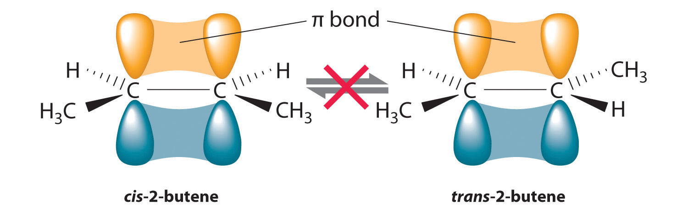
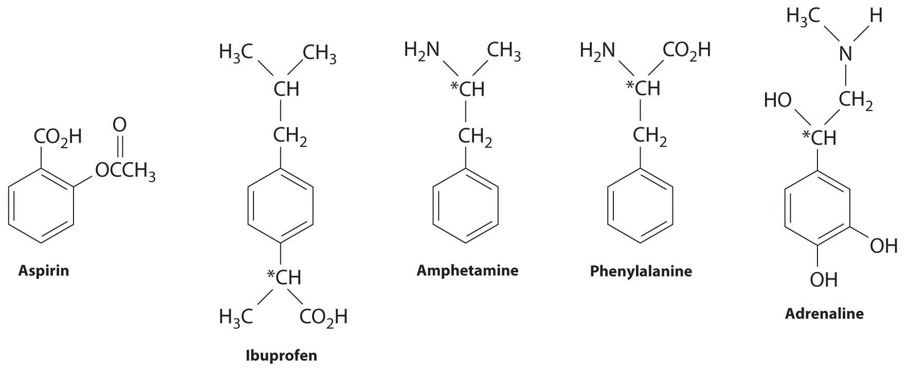
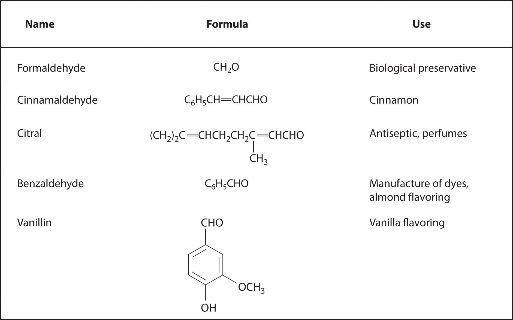
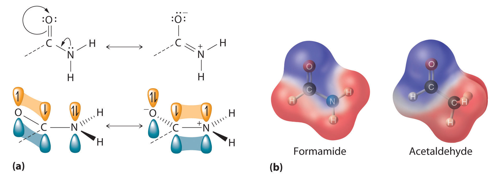
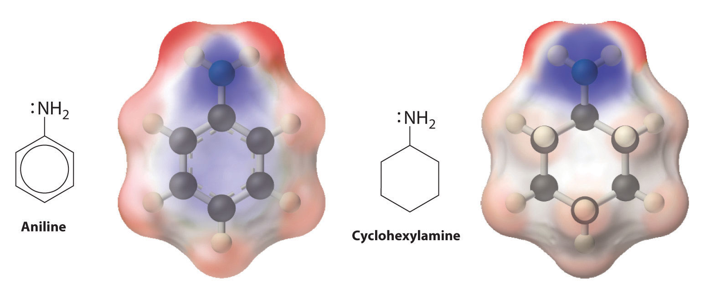

In Chapter 2 "Molecules, Ions, and Chemical Formulas", you were introduced to the major classes of organic compounds, covalent compounds composed primarily of carbon and hydrogen. Organic substances have been used throughout this text to illustrate the differences between ionic and covalent bonding and to demonstrate the intimate connection between the structures of compounds and their chemical reactivity. You learned, for example, that even though NaOH and alcohols (ROH) both have OH in their formula, NaOH is an ionic compound that dissociates completely in water to produce a basic solution containing Na+ and OH− ions, whereas alcohols are covalent compounds that do not dissociate in water and instead form neutral aqueous solutions. You also learned that an amine (RNH2), with its lone pairs of electrons, is a base, whereas a carboxylic acid (RCO2H), with its dissociable proton, is an acid. (For more information on acids and bases, see Chapter 2 "Molecules, Ions, and Chemical Formulas", Section 2.5 "Acids and Bases".)
The structure of a solid with a hybrid metal-organic framework. Organic and inorganic groups of the proper structure can be used to synthesize solids with very large pores (central sphere) that can accommodate a variety of small molecules. The rigid benzene rings are used as “props” to hold the metal units (carboxylate-bridged copper dimers) apart. Such solids have potential applications in hydrogen storage for use in fuel cells or automobiles.
Carbon is unique among the elements in its ability to catenate, to form a wide variety of compounds that contain long chains and/or rings of carbon atoms. (For more information on carbon, see Chapter 12 "Solids", Section 12.8 "Polymeric Solids", and Chapter 22 "The ", Section 22.2 "The Elements of Group 14".) Some of the most complex chemical structures known are those of the organic molecules found in living organisms. (For more information on biopolymers, see Chapter 12 "Solids", Section 12.8 "Polymeric Solids".) In spite of their size and complexity, these biological molecules obey the same chemical principles as simpler organic molecules. Thus we can use Lewis electron structures to understand the preferred mode of reactivity of a variety of organic compounds, relative electronegativities and bond polarities to predict how certain groups of atoms will react, and molecular orbital theory to explain why certain organic species that contain multiple bonds are especially stable or undergo particular reactions when they interact with light. (For more information on Lewis electron structures, see Chapter 8 "Ionic versus Covalent Bonding", Section 8.5 "Lewis Structures and Covalent Bonding". For more information on bonding, see Chapter 8 "Ionic versus Covalent Bonding", Section 8.9 "Polar Covalent Bonds". For more information on light interactions, see Chapter 9 "Molecular Geometry and Covalent Bonding Models", Section 9.4 "Polyatomic Systems with Multiple Bonds".) In this chapter, we continue our description of organic compounds by focusing on their molecular structures and reactivity; we will also introduce some of the fundamental types of reactions and reaction mechanisms you will encounter in organic and biological chemistry. We discuss why butter is a solid and oils are liquids despite the apparent similarities in their structures, why the widely used anti-inflammatory drug ibuprofen takes longer than half an hour to relieve pain, and the identity of the major carcinogen in grilled meats and cigarette smoke. The chapter concludes with a brief introduction to the molecules of life, which will explain how the consumption of lactose can result in mental retardation and cirrhosis of the liver in some individuals, how hibernating animals survive during the winter, and how certain groups of antibiotics kill bacteria that are harmful to humans.
In Chapter 2 "Molecules, Ions, and Chemical Formulas" and Chapter 5 "Energy Changes in Chemical Reactions", you were introduced to several structural units that chemists use to classify organic compounds and predict their reactivities. These functional groupsThe structural units that chemists use to classify organic compounds and predict their reactivities under a given set of conditions., which determine the chemical reactivity of a molecule under a given set of conditions, can consist of a single atom (such as Cl) or a group of atoms (such as CO2H). The major families of organic compounds are characterized by their functional groups. Figure 24.1 "Major Classes of Organic Compounds" summarizes five families introduced in earlier chapters, gives examples of compounds that contain each functional group, and lists the suffix or prefix used in the systematic nomenclature of compounds that contain each functional group.
Figure 24.1 Major Classes of Organic Compounds

The first family listed in Figure 24.1 "Major Classes of Organic Compounds" is the hydrocarbons. These include alkanes, with the general molecular formula CnH2n+2 where n is an integer; alkenes, represented by CnH2n; alkynes, represented by CnH2n−2; and arenes. Halogen-substituted alkanes, alkenes, and arenes form a second major family of organic compounds, which include the alkyl halides and the aryl halides. Oxygen-containing organic compounds, a third family, may be divided into two main types: those that contain at least one C–O bond, which include alcohols, phenols (derivatives of benzene), and ethers, and those that contain a carbonyl group (C=O), which include aldehydes, ketones, and carboxylic acids. Carboxylic acid derivatives, the fourth family listed, are compounds in which the OH of the –CO2H functional group is replaced by either an alkoxy (–OR) group, producing an ester, or by an amido (–NRR′, where R and R′ can be H and/or alkyl groups), forming an amide. Nitrogen-containing organic compounds, the fifth family, include amines; nitriles, which have a C≡N bond; and nitro compounds, which contain the –NO2 group.
As you learned in Chapter 2 "Molecules, Ions, and Chemical Formulas", Section 2.4 "Naming Covalent Compounds", the systematic nomenclature of organic compounds indicates the positions of substituents using the lowest numbers possible to identify their locations in the carbon chain of the parent compound. If two compounds have the same systematic name, then they are the same compound. Although systematic names are preferred because they are unambiguous, many organic compounds are known by their common names rather than their systematic names. Common nomenclature uses the prefix form—for a compound that contains no carbons other than those in the functional group, and acet—for those that have one carbon atom in addition [two in the case of acetone, (CH3)2C=O]. Thus methanal and ethanal, respectively, are the systematic names for formaldehyde and acetaldehyde.

Recall that in the systematic nomenclature of aromatic compounds, the positions of groups attached to the aromatic ring are indicated by numbers, starting with 1 and proceeding around the ring in the direction that produces the lowest possible numbers. For example, the position of the first CH3 group in dimethyl benzene is indicated with a 1, but the second CH3 group, which can be placed in any one of three positions, produces 1,2-dimethylbenzene, 1,3-dimethylbenzene, or 1,4-dimethylbenzene (Figure 24.2 "Common Nomenclature for Aromatic Ring Substitutions"). In common nomenclature, in contrast, the prefixes ortho-, meta-, and para- are used to describe the relative positions of groups attached to an aromatic ring. If the CH3 groups in dimethylbenzene, whose common name is xylene, are adjacent to each other, the compound is commonly called ortho-xylene, abbreviated o-xylene. If they are across from each other on the ring, the compound is commonly called para-xylene or p-xylene. When the arrangement is intermediate between those of ortho- and para- compounds, the name is meta-xylene or m-xylene.
Figure 24.2 Common Nomenclature for Aromatic Ring Substitutions

We begin our discussion of the structure and reactivity of organic compounds by exploring structural variations in the simple saturated hydrocarbons known as alkanes. These compounds serve as the scaffolding to which the various functional groups are most often attached.
Functional groups are structural units that determine the chemical reactivity of a molecule under a given set of conditions. Organic compounds are classified into several major categories based on the functional groups they contain. In the systematic names of organic compounds, numbers indicate the positions of functional groups in the basic hydrocarbon framework. Many organic compounds also have common names, which use the prefix form—for a compound that contains no carbons other than those in the functional group and acet—for those that have one additional carbon atom.
Can two substances have the same systematic name and be different compounds?
Is a carbon–carbon multiple bond considered a functional group?
In earlier discussions of organic compounds, we focused on differences in how the functional groups were connected to the carbon framework. Differences in connectivity resulted in different chemical compounds with different names. You learned, for example, that although 1-propanol (n-propanol) and 2-propanol (isopropanol) have the same molecular formula (C3H8O), they have different physical and chemical properties. Just as with metal complexes, compounds that have the same molecular formula but different arrangements of atoms are called isomers. (For more information on metal complexes, see Chapter 23 "The ", Section 23.4 "Coordination Compounds".) In this section, we describe various types of isomers, beginning with those whose three-dimensional structures differ only as the result of rotation about a C–C bond.
The C–C single bonds in ethane, propane, and other alkanes are formed by the overlap of an sp3 hybrid orbital on one carbon atom with an sp3 hybrid orbital on another carbon atom, forming a σ bond (Figure 24.3 "Carbon–Carbon Bonding in Alkanes"). Each sp3 hybrid orbital is cylindrically symmetrical (all cross-sections are circles), resulting in a carbon–carbon single bond that is also cylindrically symmetrical about the C–C axis. Because rotation about the carbon–carbon single bond can occur without changing the overlap of the sp3 hybrid orbitals, there is no significant electronic energy barrier to rotation. Consequently, many different arrangements of the atoms are possible, each corresponding to different degrees of rotation. Differences in three-dimensional structure resulting from rotation about a σ bond are called differences in conformation, and each different arrangement is called a conformational isomer (or conformer)Isomers whose three-dimensional structures differ because of rotation about a σ bond..
Conformational isomers differ in their three-dimensional structure due to rotation about a σ bond.
Figure 24.3 Carbon–Carbon Bonding in Alkanes

Overlapping sp3 hybrid orbitals on adjacent carbon atoms form a cylindrically symmetrical σ bond. Because rotation about the bond does not affect the overlap of the bonding orbitals, there is no electronic energy barrier to rotation.
The simplest alkane to have a conformational isomer is ethane. Differences between the conformations of ethane are depicted especially clearly in drawings called Newman projections, such as those shown in part (a) in Figure 24.4 "Eclipsed and Staggered Conformations of Ethane". In a Newman projection, the ethane molecule is viewed along the C–C axis, with the carbon that is in front shown as a vertex and the carbon that is in back shown as a circle. The three hydrogen atoms nearest the viewer are shown bonded to the front carbon, and the three hydrogen atoms farthest from the viewer are shown bonded to the circle. In one extreme, called the eclipsed conformation, the C–H bonds on adjacent carbon atoms lie in the same plane. In the other extreme, called the staggered conformation, the hydrogen atoms are positioned as far from one another as possible. Rotation about the C–C bond produces an infinite number of conformations between these two extremes, but the staggered conformation is the most stable because it minimizes electrostatic repulsion between the hydrogen atoms on adjacent carbons.
Figure 24.4 Eclipsed and Staggered Conformations of Ethane

(a) In a Newman projection, the molecule is viewed along a C–C axis. The carbon in front is represented as a vertex, whereas the carbon that is bonded to it is represented as a circle. In ethane, the C–H bonds to each carbon are positioned at 120° from each other. In the fully eclipsed conformation, the C–H bonds on adjacent carbon atoms are parallel and lie in the same plane. In the staggered conformation, the hydrogen atoms are positioned as far apart as possible. (b) The eclipsed conformation is 12.6 kJ/mol higher in energy than the staggered conformation because of electrostatic repulsion between the hydrogen atoms. An infinite number of conformations of intermediate energy exist between the two extremes.
In a Newman projection, the angles between adjacent C–H bonds on the same carbon are drawn at 120°, although H–C–H angles in alkanes are actually tetrahedral angles of 109.5°, which for chains of more than three carbon atoms results in a kinked structure. (For more information on bond angles and molecular modeling, see Chapter 2 "Molecules, Ions, and Chemical Formulas", Section 2.1 "Chemical Compounds".) Despite this three-dimensional inaccuracy, Newman projections are useful for predicting the relative stability of conformational isomers. As shown in part (b) in Figure 24.4 "Eclipsed and Staggered Conformations of Ethane", the higher energy of the eclipsed conformation represents an energy barrier of 12.6 kJ/mol that must be overcome for rotation about the C–C bond to occur. This barrier is so low, however, that rotation about the C–C bond in ethane is very fast at room temperature and occurs several million times per second for each molecule.
Longer-chain alkanes can also be represented by Newman projections. In more complex alkanes and alkane derivatives, rotation can occur about each C–C bond in a molecule. Newman projections are therefore useful for revealing steric barriers to rotation at a particular C–C bond due to the presence of bulky substituents. Figure 24.5 "Potential Energy Plot and Newman Projections of Eclipsed and Staggered Conformations of " shows a plot of potential energy versus the angle of rotation about the central C–C bond (between carbon atoms 2 and 3) of n-butane (C4H10). The structure that minimizes electrostatic repulsion is the one in which the methyl groups, corresponding to carbon atoms 1 and 4, are as far apart as possible; that is, the staggered conformation. Notice that because the substituents on C2 and C3 in n-butane are not all the same, energetically nonequivalent eclipsed and staggered conformations are possible; most molecules interconvert rapidly between these conformations by a series of simple rotations.
Figure 24.5 Potential Energy Plot and Newman Projections of Eclipsed and Staggered Conformations of n-Butane

In these projections, the molecule is viewed along the C2–C3 axis. The least stable structure is the eclipsed conformation in which the two methyl groups (C1 and C4) are adjacent to each other. The most stable structure is the staggered conformation in which the methyl groups are as far apart as possible. Because the substituents on each central carbon atom are not all the same, a 120° rotation about the C2–C3 bond generates energetically nonequivalent eclipsed and staggered conformations.
Draw Newman projections showing the staggered and eclipsed conformations of 1,1,1-trichloroethane (CCl3CH3).
Given: organic molecule
Asked for: staggered and eclipsed conformations
Strategy:
A Identify the C–C bond of interest. Then draw the Newman projection by representing one carbon as a vertex and the other as a circle.
B Draw bonds to each carbon at 120° angles from one another, with one arrangement representing the staggered conformation and the other the eclipsed conformation.
C Complete the Newman projections by attaching the appropriate atoms or substituent groups to the central C atoms in each conformation.
Solution:
A There is only one C–C bond: C1 is connected to three Cl atoms and C2 to three H atoms. We draw C1 as a point and C2 as a circle.
B Now we draw bonds on each carbon at 120° angles from one another to represent the staggered conformation and the eclipsed conformation.
C We then attach the H and Cl atoms to the carbon atoms in each conformation as shown.

Exercise
Draw Newman projections to illustrate the staggered and eclipsed conformations of propane (C3H8) as viewed along the C1–C2 axis.
Answer:

Unlike conformational isomers, which do not differ in connectivity, structural isomersIsomers that have the same molecular formula but differ in which atoms are bonded to one another. differ in connectivity, as illustrated here for 1-propanol and 2-propanol. (For more information on structural isomers, see Chapter 23 "The ", Section 23.4 "Coordination Compounds".) Although these two alcohols have the same molecular formula (C3H8O), the position of the –OH group differs, which leads to differences in their physical and chemical properties.

In the conversion of one structural isomer to another, at least one bond must be broken and reformed at a different position in the molecule. Consider, for example, the following five structures represented by the formula C5H12:

Of these structures, (a) and (d) represent the same compound, as do (b) and (c). No bonds have been broken and reformed; the molecules are simply rotated about a 180° vertical axis. Only three—n-pentane (a) and (d), 2-methylbutane (b) and (c), and 2,2-dimethylpropane (e)—are structural isomers. Because no bonds are broken in going from (a) to (d) or from (b) to (c), these alternative representations are not structural isomers. The three structural isomers—either (a) or (d), either (b) or (c), and (e)—have distinct physical and chemical properties.
Structural isomers differ in their connectivity.
Draw all the structural isomers of C6H14.
Given: organic molecule
Asked for: all structural isomers
Strategy:
A Draw the simplest structural isomer, which is often the straight-chain alkane.
B Obtain branched isomers by substituting one hydrogen along the chain with an appropriate group from the chain.
C If possible, substitute more than one hydrogen with appropriate groups to obtain isomers that are more highly branched.
Solution:
A The simplest structural isomer is the straight-chain alkane n-hexane (CH3CH2CH2CH2CH2CH3).
B Removing a methyl group from one end and reattaching it to adjacent carbons while substituting hydrogen in its place give two other structures:

C To obtain yet another structural isomer, move two methyl groups to create a molecule with two branches:

We create one more structural isomer by attaching two methyl groups to the same carbon atom:

Thus there are four structural isomers of C6H14.
Exercise
Draw all the structural isomers of C4H9Cl.
Answer:

Molecules with the same connectivity but different arrangements of the atoms in space are called stereoisomersMolecules that have the same connectivity but whose component atoms have different orientations in space.. There are two types of stereoisomers: geometric and optical. Geometric isomers differ in the relative position(s) of substituents in a rigid molecule. (For more information on stereoisomers, see Chapter 23 "The ", Section 23.4 "Coordination Compounds".) Simple rotation about a C–C σ bond in an alkene, for example, cannot occur because of the presence of the π bond. The substituents are therefore rigidly locked into a particular spatial arrangement (part (a) in Figure 2.16 "Some Simple (a) Alkenes, (b) Alkynes, and (c) Cyclic Hydrocarbons"). Thus a carbon–carbon multiple bond, or in some cases a ring, prevents one geometric isomer from being readily converted to the other. The members of an isomeric pair are identified as either cis or trans, and interconversion between the two forms requires breaking and reforming one or more bonds. Because their structural difference causes them to have different physical and chemical properties, cis and trans isomers are actually two distinct chemical compounds.
Stereoisomers have the same connectivity but different arrangements of atoms in space.
Optical isomers are molecules whose structures are mirror images but cannot be superimposed on one another in any orientation. Optical isomers have identical physical properties, although their chemical properties may differ in asymmetric environments. Molecules that are nonsuperimposable mirror images of each other are said to be chiral (pronounced “ky-ral,” from the Greek cheir, meaning “hand”). Examples of some familiar chiral objects are your hands, feet, and ears. As shown in part (a) in Figure 24.6 "Chiral and Achiral Objects", your left and right hands are nonsuperimposable mirror images. (Try putting your right shoe on your left foot—it just doesn’t work.) An achiral object is one that can be superimposed on its mirror image, as shown by the superimposed flasks in part (b) in Figure 24.6 "Chiral and Achiral Objects".
Figure 24.6 Chiral and Achiral Objects

(a) Objects that are nonsuperimposable mirror images of each other are chiral, such as the left and the right hand. (b) The unmarked flask is achiral because it can be superimposed on its mirror image.
Most chiral organic molecules have at least one carbon atom that is bonded to four different groups, as occurs in the bromochlorofluoromethane molecule shown in part (a) in Figure 24.7 "Comparison of Chiral and Achiral Molecules". This carbon, often designated by an asterisk in structural drawings, is called a chiral center or asymmetric carbon atom. If the bromine atom is replaced by another chlorine (part (b) in Figure 24.7 "Comparison of Chiral and Achiral Molecules"), the molecule and its mirror image can now be superimposed by simple rotation. Thus the carbon is no longer a chiral center. Asymmetric carbon atoms are found in many naturally occurring molecules, such as lactic acid, which is present in milk and muscles, and nicotine, a component of tobacco. A molecule and its nonsuperimposable mirror image are called enantiomers (from the Greek enantiou, meaning “opposite”).
Figure 24.7 Comparison of Chiral and Achiral Molecules

(a) Bromochlorofluoromethane is a chiral molecule whose stereocenter is designated with an asterisk. Rotation of its mirror image does not generate the original structure. To superimpose the mirror images, bonds must be broken and reformed. (b) In contrast, dichlorofluoromethane and its mirror image can be rotated so they are superimposable.

Draw the cis and trans isomers of each compound.
Given: organic compounds
Asked for: cis and trans isomers
Strategy:
Draw the unsubstituted compound corresponding to the systematic name given. Then place substituents on the same side to obtain the cis isomer and on opposite sides to obtain the trans isomer.
Solution:
The name tells us that this compound contains a five-carbon ring with two methyl groups attached. The 1,3 notation means that the methyl groups are not adjacent in the five-membered ring:

Placing the methyl substituents on the same side of the ring gives the cis isomer, whereas placing them on opposite sides of the ring gives the trans isomer:

The compound 3-hexene can exist as a cis or trans isomer:

Replacing the hydrogen atoms on the third and fourth carbons by chlorine does not change the overall structures of the isomers:

Exercise
Draw the cis and trans isomers of each compound.
Answer:


Which of these compounds exist as at least one pair of enantiomers?


Given: organic compounds
Asked for: existence of enantiomers
Strategy:
Determine whether the compound is chiral. In most cases, this means that at least one carbon is bonded to four different groups. If the compound is chiral, it exists as enantiomers.
Solution:
Exercise
Which of these compounds have at least one pair of enantiomers?


Answer:
(c)
Although enantiomers have identical densities, melting and boiling points, colors, and solubility in most solvents, they differ in their interaction with plane-polarized light, which consists of electromagnetic waves oscillating in a single plane. In contrast, normal (unpolarized) light consists of electromagnetic waves oscillating in all directions perpendicular to the axis of propagation. When normal light is passed through a substance called a polarizer, only light oscillating in one direction is transmitted. A polarizer selectively filters out light that oscillates in any but the desired plane (Figure 24.8 "Detecting the Optical Activity of Chiral Substances").
Figure 24.8 Detecting the Optical Activity of Chiral Substances

When polarized light is passed through a solution that contains an achiral compound, there is no net rotation of the plane of polarization of the light. In contrast, when polarized light is passed through a solution that contains one enantiomer of a chiral compound, as shown here, the light is rotated either clockwise [dextrorotatory, (+) enantiomer] or counterclockwise [levorotatory, (−) enantiomer] by an angle that depends on the molecular structure and concentration of the compound, the path length, and the wavelength of the light.
When plane-polarized light is passed through a solution, electromagnetic radiation interacts with the solute and solvent molecules. If the solution contains an achiral compound, the plane-polarized light enters and leaves the solution unchanged because achiral molecules cause it to rotate in random directions. The solute is therefore said to be optically inactive. If the solution contains a single enantiomer of a chiral compound, however, the plane-polarized light is rotated in only one direction, and the solute is said to be optically active. A clockwise rotation is called dextrorotatory (from the Latin dextro, meaning “to the right”) and is indicated in the name of the compound by (+), whereas a counterclockwise rotation is called levorotatory (from the Latin levo, meaning “to the left”) and is designated (−). As you will soon discover, this designation is important in understanding how chiral molecules interact with one another.
Chiral molecules are optically active; achiral molecules are not.
The magnitude of the rotation of plane-polarized light is directly proportional to the number of chiral molecules in a solution; it also depends on their molecular structure, the temperature, and the wavelength of the light. Because of these variables, every chiral compound has a specific rotationThe amount (in degrees) by which the plane of polarized light is rotated when the light is passed through a solution that contains 1.0 g of a solute per 1.0 mL of solvent in a tube 10.0 cm long., which is defined as the amount (in degrees) by which the plane of polarized light is rotated when the light is passed through a solution containing 1.0 g of solute per 1.0 mL of solvent in a tube 10.0 cm long. A chiral solution that contains equal concentrations of a pair of enantiomers is called a racemic mixture. In such a solution, the optical rotations exactly cancel one another, so there is no net rotation, and the solution is optically inactive. The categories of stereoisomers are summarized in Figure 24.9 "Classification of Stereoisomers".
Figure 24.9 Classification of Stereoisomers

In both types of stereoisomer—geometric and optical—isomeric molecules have identical connectivity, but the arrangement of atoms in space differs. Cis and trans isomers exhibit different physical and chemical properties, whereas enantiomers differ only in their interaction with plane-polarized light and reactions in asymmetric environments. Depending on the direction in which they rotate polarized light, enantiomers are identified as (+) or (−). The designations L- and D- represent an alternative labeling system.
In living organisms, virtually every molecule that contains a chiral center is found as a single enantiomer, not a racemic mixture. At the molecular level, our bodies are chiral and interact differently with the individual enantiomers of a particular compound. For example, the two enantiomers of carvone produce very different responses in humans: (−)-carvone is the substance responsible for the smell of spearment oil, and (+)-carvone—the major flavor component of caraway seeds—is responsible for the characteristic aroma of rye bread.

A pharmaceutical example of a chiral compound is ibuprofen, a common analgesic and anti-inflammatory agent that is the active ingredient in pain relievers such as Motrin and Advil (Figure 24.16 "Biologically Active Substituted Arenes"). The drug is sold as a racemic mixture that takes approximately 38 minutes to achieve its full effect in relieving pain and swelling in an adult human. Because only the (+) enantiomer is active in humans, however, the same mass of medication would relieve symptoms in only about 12 minutes if it consisted of only the (+) enantiomer. Unfortunately, isolating only the (+) enantiomer would substantially increase the cost of the drug. Conversion of the (−) to (+) enantiomer in the human body accounts for the delay in feeling the full effects of the drug. A racemic mixture of another drug, the sedative thalidomide, was sold in Europe from 1956 to the early 1960s. It was prescribed to treat nausea during pregnancy, but unfortunately only the (+) enantiomer was safe for that purpose. The (−) enantiomer was discovered to be a relatively potent teratogen, a substance that causes birth defects, which caused the children of many women who had taken thalidomide to be born with missing or undeveloped limbs. As a result, thalidomide was quickly banned for this use. It is currently used to treat leprosy, however, and it has also shown promise as a treatment for AIDS (acquired immunodeficiency syndrome).
These examples dramatically illustrate the point that the biological activities of enantiomers may be very different. But how can two molecules that differ only by being nonsuperimposable mirror images cause such different responses? The biological effects of many substances—including molecules such as carvone that have a scent and drugs such as ibuprofen and thalidomide—depend on their interaction with chiral sites on specific receptor proteins. As schematically illustrated in Figure 24.10 "The Interaction of Chiral Molecules with Biological Receptors", only one enantiomer of a chiral substance interacts with a particular receptor, thereby initiating a response. The other enantiomer may not bind at all, or it may bind to another receptor, producing a different response.
Figure 24.10 The Interaction of Chiral Molecules with Biological Receptors

Only one enantiomer of a chiral molecule fits into a chiral receptor site, which typically is a small portion of a large protein. The binding of a molecule to its receptor elicits a characteristic response. The other enantiomer cannot fit into the same site and thus elicits no response. It may, however, produce a different response by binding to another site.
Isomers are different compounds that have the same molecular formula. For an organic compound, rotation about a σ bond can produce different three-dimensional structures called conformational isomers (or conformers). In a Newman projection, which represents the view along a C–C axis, the eclipsed conformation has the C–H bonds on adjacent carbon atoms parallel to each other and in the same plane, representing one conformational extreme. In the staggered conformation, the opposite extreme, the hydrogen atoms are as far from one another as possible. Electrostatic repulsions are minimized in the staggered conformation. Structural isomers differ in the connectivity of the atoms. Structures that have the same connectivity but whose components differ in their orientations in space are called stereoisomers. Stereoisomers can be geometric isomers, which differ in the placement of substituents in a rigid molecule, or optical isomers, nonsuperimposable mirror images. Molecules that are nonsuperimposable mirror images are chiral molecules. A molecule and its nonsuperimposable mirror image are called enantiomers. These differ in their interaction with plane-polarized light, light that oscillates in only one direction. A compound is optically active if its solution rotates plane-polarized light in only one direction and optically inactive if its rotations cancel to produce no net rotation. A clockwise rotation is called dextrorotatory and is indicated in the compound’s name by (+), whereas a counterclockwise rotation is called levorotatory, designated by (−). The specific rotation is the amount (in degrees) by which the plane of polarized light is rotated when light is passed through a solution containing 1.0 g of solute per 1.0 mL of solvent in a tube 10.0 cm long. A solution that contains equal concentrations of each enantiomer in a pair is a racemic mixture; such solutions are optically inactive.
What hybrid orbitals are used to form C–C bonds in saturated hydrocarbons? Describe the bond.
How are conformational isomers related? Sketch two conformational isomers of propane, looking along the C1–C2 axis.
Why do alkanes with more than two carbons have a kinked structure? Explain why a kinked structure is so stable.
Are n-pentane and 2-methylbutane conformational isomers or structural isomers? How would you separate these compounds from a mixture of the two?
How are structural isomers different from stereoisomers? Do stereoisomers have free rotation about all carbon–carbon bonds? Explain your answers.
Which of these objects is chiral?
Which of these objects is chiral?
Are all stereoisomers also enantiomers? Are all enantiomers stereoisomers? Explain your answers.
sp3; it is a σ bond that is cylindrically symmetrical (all cross sections perpendicular to the internuclear axis are circles).
The sp3 hybridized orbitals form bonds at tetrahedral angles (109.5°), which forces the carbon atoms to form a zigzag chain.
(a), (c), and (d)
Single bonds between carbon atoms are free to rotate 360°.
Draw Newman projections of the n-hexane conformations corresponding to the energy minima and maxima in the diagram, which shows potential energy versus degrees of rotation about the C3–C4 axis.

Sketch all the structural isomers of each compound.
Draw all the possible structural isomers of each compound.
Sketch all the isomers of each compound. Identify the cis- and trans-isomers.
Which molecules are chiral? On the structural formulas of the chiral molecules, identify any chiral centers with an asterisk.
Which molecules are chiral? On the structural formulas of the chiral molecules, identify any chiral centers with an asterisk.
Draw the structures of the enantiomers of each compound.
Draw the structures of the enantiomers of each compound.
Draw the structures of the enantiomers of each compound.


Draw the structures of the enantiomers of each compound.


(b) and (d);

Understanding why organic molecules react as they do requires knowing something about the structure and properties of the transient species that are generated during chemical reactions. Identifying transient intermediates enables chemists to elucidate reaction mechanisms, which often allows them to control the products of a reaction. In designing the synthesis of a molecule, such as a new drug, for example, chemists must be able to understand the mechanisms of intermediate reactions to maximize the yield of the desired product and minimize the occurrence of unwanted reactions. Moreover, by recognizing the common reaction mechanisms of simple organic molecules, we can understand how more complex systems react, including the much larger molecules encountered in biochemistry.
Nearly all chemical reactions, whether organic or inorganic, proceed because atoms or groups of atoms having a positive charge or a partial positive charge interact with atoms or groups of atoms having a negative charge or a partial negative charge. Thus when a bond in a hydrocarbon is cleaved during a reaction, identifying the transient species formed, some of which are charged, allows chemists to determine the mechanism and predict the products of a reaction.
Chemists often find that the reactivity of a molecule is affected by the degree of substitution of a carbon that is bonded to a functional group. These carbons are designated as primary, secondary, or tertiary. A primary carbon is bonded to only one other carbon and a functional group, a secondary carbon is bonded to two other carbons and a functional group, and a tertiary carbon is bonded to three other carbons and a functional group.

Cleaving a C–H bond can generate either –C+ and H−, −C· and H· or −C− and H+, all of which are unstable and therefore highly reactive. The most common species formed is –C+, which is called a carbocationA highly reactive species that can form when a C–H bond is cleaved, carbocations have only six valence electrons and are electrophiles. (part (a) in Figure 24.11 "Transient Intermediates in Organic Reactions"). A carbocation has only six valence electrons and is therefore electron deficient. It is an electrophileAn electron-deficient species that needs electrons to complete its octet. (from “electron” and the Greek suffix phile, meaning “loving”), which is a species that needs electrons to complete its octet. (Recall that electron-deficient compounds, such as those of the group 13 elements, act as Lewis acids in inorganic reactions.) In general, when a highly electronegative atom, such as Cl, is bonded to a carbocation, it draws electrons away from the carbon and destabilizes the positive charge. In contrast, alkyl groups and other species stabilize the positive charge by increasing electron density at the carbocation. Thus a tertiary carbocation (R3C+) is more stable than a primary carbocation (RCH2+).
The reactivity of a molecule is often affected by the degree of substitution of the carbon bonded to a functional group.
Adding one electron to a carbocation produces a neutral species called a radicalHighly reactive species that have an unpaired valence electron.. (For more information on radicals, see Chapter 14 "Chemical Kinetics", Section 14.6 "Reaction Rates—A Microscopic View".) An example is the methyl radical (·CH3), shown in part (b) in Figure 24.11 "Transient Intermediates in Organic Reactions". Because the carbon still has less than an octet of electrons, it is electron deficient and also behaves as an electrophile. Like carbocations, radicals can be stabilized by carbon substituents that can donate some electron density to the electron-deficient carbon center. Like carbocations, a tertiary radical (R3C·) is more stable than a primary radical (RCH2·).
Figure 24.11 Transient Intermediates in Organic Reactions

(a) The simplest carbocation is the methyl cation (CH3+), which has six valence electrons and is an electrophile. Its structure is trigonal planar, with an sp2 hybridized carbon and a vacant p orbital. (b) The methyl radical (·CH3) is a radical that, like the carbocation, is trigonal planar and an electrophile. It is also sp2 hybridized, but there is a single electron in the unhybridized p orbital. (c) The simplest organic carbanion is CH3−, which has a trigonal pyramidal structure with an sp3 hybridized carbon that has a lone pair of electrons. Because it has a strong tendency to share its lone pair with another atom or molecule, a carbanion is a nucleophile.
Adding an electron to a radical produces a carbanionA highly reactive species that can form when a C–H bond is cleaved, carbanions have eight valence electrons and are nucleophiles., which contains a negatively charged carbon with eight valence electrons (part (c) in Figure 24.11 "Transient Intermediates in Organic Reactions"). The methyl anion (CH3−) has a structure that is similar to NH3 with its lone pair of electrons, but it has a much stronger tendency to share its lone pair with another atom or molecule. A carbanion is a nucleophileAn electron-rich species that has a pair of electrons available to be shared with another atom. (from “nucleus” and phile), an electron-rich species that has a pair of electrons available to share with another atom. Carbanions are destabilized by groups that donate electrons, so the relationship between their structure and reactivity is exactly the opposite of carbocations and radicals. That is, a tertiary carbanion (R3C−) is less stable than a primary carbanion (RCH2−). Carbanions are most commonly encountered in organometallic compounds such as methyllithium (CH3Li) or methylmagnesium chloride (CH3MgCl), where the more electropositive metal ion stabilizes the negative charge on the more electronegative carbon atom.
Electrophiles such as carbocations seek to gain electrons and thus have a strong tendency to react with nucleophiles, which are negatively charged species or substances with lone pairs of electrons. Reacting electrophiles with nucleophiles is a central theme in organic reactions.
Electrophiles react with nucleophiles.
Classify each species as an electrophile, a nucleophile, or neither.
Given: molecular formulas
Asked for: mode of reactivity
Strategy:
Determine whether the compound is electron deficient, in which case it is an electrophile; electron rich, in which case it is a nucleophile; or neither.
Solution:
Exercise
Classify each compound as an electrophile, a nucleophile, or neither.
Answer:
The reactivity of a molecule is often affected by the degree of substitution of the carbon bonded to a functional group; the carbon is designated as primary, secondary, or tertiary. Identifying the transient species formed in a chemical reaction, some of which are charged, enables chemists to predict the mechanism and products of the reaction. One common transient species is a carbocation, a carbon with six valence electrons that is an electrophile; that is, it needs electrons to complete its octet. A radical is a transient species that is neutral but electron deficient and thus acts as an electrophile. In contrast, a carbanion has eight valence electrons and is negatively charged. It is an electron-rich species that is a nucleophile because it can share a pair of electrons. In chemical reactions, electrophiles react with nucleophiles.
Arrange CH2F+, CHCl2+, CH3+, and CHF2+ in order of increasing stability. Explain your reasoning.
Arrange CH3CH2+, CHBr2+, CH3+, and CHBrCl+ in order of decreasing stability. Explain your reasoning.
Identify the electrophile and the nucleophile in each pair.
Identify the electrophile and the nucleophile in each pair.
CHF2+ < CHCl2+ < CH2F+ < CH3+; electronegative substituents destabilize the positive charge. The greater the number of electronegative substituents and the higher their electronegativity, the more unstable the carbocation.
Draw Lewis electron structures of the products of carbon–hydrogen cleavage reactions. What is the charge on each species?
Identify the electrophile and the nucleophile in each reaction; then complete each chemical equation.
Certain patterns are encountered repeatedly in organic reactions, many reflecting the interactions of nucleophiles and electrophiles. In this section, we discuss five common types of organic reactions: substitution reactions, elimination reactions, addition reactions, radical reactions, and oxidation–reduction reactions. You have encountered many of these types of reactions previously, such as the formation of peptides by the elimination of water, the oxidation–reduction reactions that generate voltage in batteries, and chain reactions that involve organic radicals. (For more information on peptide formation, see Chapter 12 "Solids", Section 12.8 "Polymeric Solids". For more information on batteries, see Chapter 19 "Electrochemistry". For more information on radicals, see Chapter 14 "Chemical Kinetics", Section 14.6 "Reaction Rates—A Microscopic View".) In this section, we expand our discussion to include some of the mechanisms behind these reactions.
In a substitution reactionA chemical reaction in which one atom or a group of atoms in a substance is replaced by another atom or a group of atoms from another substance., one atom or a group of atoms in a substance is replaced by another atom or group of atoms from another substance. A typical substitution reaction is reacting the hydroxide ion with methyl chloride:
Equation 24.1
CH3Cl + OH− → CH3OH + Cl−Methyl chloride has a polar C–Cl bond, with the carbon atom having a partial positive charge. In Equation 24.1, the electronegative Cl atom is replaced by another electronegative species that is a stronger nucleophile, in this case OH−. Reactions of this sort are called nucleophilic substitution reactions. For this type of reaction to occur, the nucleophilic reactant must possess a pair of electrons and have a greater affinity for the electropositive carbon atom than the original substituent.
One type of nucleophilic substitution reaction is shown in Equation 24.1. It proceeds by a mechanism in which the lone pair of electrons on the entering nucleophile (OH−) attacks the partially positively charged carbon atom of the polar C–Cl bond, causing the C–Cl bond to weaken and break:
Figure 24.12

In nucleophilic substitution reactions, the nucleophile must possess a pair of electrons and have a greater affinity for the electropositive species than the original substituent.
The convention for writing such a mechanism is to draw arrows showing the direction of electron flow—that is, from the electron-rich center (the nucleophile) to the electron-poor center (the electrophile). The intermediate species, enclosed by square brackets, represents a transient arrangement of atoms that is only postulated to exist. If the atom under attack (in this case, the partially positively charged carbon atom) had –CH3 groups bonded to it rather than H atoms, the bulky methyl groups would interfere with the attack by OH−, making the reaction sterically hindered. The reaction would then proceed in two discrete steps in a second type of substitution reaction: the C–Cl bond would break, forming the (CH3)3C+ carbocation (the electrophile), which would then react with hydroxide (the nucleophile) in a separate step to give the product, (CH3)3COH.

Mustard gas.
An example of a nucleophilic substitution reaction involves the chemical warfare agent known as mustard gas [(ClCH2CH2)2S], which caused about 400,000 casualties during World War I. Mustard gas is toxic because it contains a chloride that can be displaced by nucleophilic amino groups in proteins, thereby allowing the molecule to irreversibly bond to a protein. Because the other product of the reaction is HCl, mustard gas causes severe burns to mucous membranes in the respiratory tract. If mustard gas reacts with DNA (deoxyribonucleic acid), cross-linking of the DNA strands through sulfur occurs, which results in coding errors, the inhibition of replication, and disruption of other DNA functions. If mustard gas reacts with RNA (ribonucleic acid), protein synthesis is altered (see Section 24.6 "The Molecules of Life").
Some reactions involve the removal, or “elimination,” of adjacent atoms from a molecule. This results in the formation of a multiple bond and the release of a small molecule, so they are called elimination reactionsA chemical reaction in which adjacent atoms are removed, or “eliminated,” from a molecule, resulting in the formation of a multiple bond and a small molecule.. They have the general form
Figure 24.13

and are similar to cleavage reactions in inorganic compounds. (For more information on cleavage reactions, see Chapter 3 "Chemical Reactions", Section 3.5 "Classifying Chemical Reactions".) A typical example is the conversion of ethyl chloride to ethylene:
Equation 24.2
CH3CH2Cl → CH2=CH2 + HClElimination reactions are similar to cleavage reactions in inorganic compounds.
Much of the approximately 26 million tons of ethylene produced per year in the United States is used to synthesize plastics, such as polyethylene. In Equation 24.2, the A–B molecule eliminated is HCl, whose components are eliminated as H+ from the carbon atom on the left and Cl− from the carbon on the right. When an acid is produced, as occurs here, the reaction is generally carried out in the presence of a base (such as NaOH) to neutralize the acid.
A reaction in which the components of a species A–B are added to adjacent atoms across a carbon–carbon multiple bond is called an addition reactionA chemical reaction in which the components of a species A–B are added to adjacent atoms across a carbon-carbon multiple bond.. An example is the reverse of the reaction shown in Equation 24.2, reacting HCl with ethylene to give ethyl chloride:
Equation 24.3
HCl + CH2=CH2 → CH3CH2ClAn addition reaction is the reverse of an elimination reaction.
Although a multiple bond is stronger than a single bond, the π bonds of the multiple bond are weaker than the σ bond. The high electron density located between multiply bonded carbon atoms, however, causes alkenes and alkynes to behave like nucleophiles, where nucleophilic attack occurs from the more weakly bound π electrons. Hence alkenes and alkynes are regarded as functional groups. Nucleophilic attack occurs on the Hδ+ atom of the polar HCl bond, initially producing a species with a carbon that has only three bonds, a carbocation. In a second nucleophilic attack, Cl−, the electrophile in Equation 24.3, attacks the carbocation:

Alcohols, an important class of organic compounds, are often produced by addition reactions. Initial attack by the π bond of an alkene on a Hδ+ of H3O+ produces a carbocation. The carbocation then undergoes nucleophilic attack by a lone pair of electrons from H2O followed by elimination of H+ to form the alcohol.
Many important organic reactions involve radicals, such as the combustion of fuels. Probably the best known is reacting a saturated hydrocarbon, such as ethane, with a halogen, such as Br2. The overall reaction is as follows:
Equation 24.4
Radical chain reactions occur in three stages: initiation, propagation, and termination. (For more information on radicals, see Chapter 14 "Chemical Kinetics", Section 14.6 "Reaction Rates—A Microscopic View".) At high temperature or in the presence of light, the relatively weak Br–Br bond is broken in an initiation step that produces an appreciable number of Br atoms (Br·). During propagation, a bromine atom attacks ethane, producing a radical, which then reacts with another bromine molecule to produce ethyl bromide:
Equation 24.5
The sum of the two propagation steps corresponds to the balanced chemical equation for the overall reaction. There are three possible termination steps: the combination of (1) two bromine atoms, (2) two ethyl radicals, or (3) an ethyl and a bromine radical:
Equation 24.6
Because radicals are powerful nucleophiles and hence highly reactive, such reactions are not very selective. For example, the chlorination of n-butane gives a roughly 70:30 mixture of 2-chlorobutane, formed from the more stable radical by reacting a secondary carbon and 1-chlorobutane.
Because radicals are highly reactive, radical reactions are usually not very selective.
Oxidation–reduction reactions, which are common in organic chemistry, can often be identified by changes in the number of oxygen atoms at a particular position in the hydrocarbon skeleton or in the number of bonds between carbon and oxygen at that position. An increase in either corresponds to an oxidation, whereas a decrease corresponds to a reduction. Conversely, an increase in the number of hydrogen atoms in a hydrocarbon is often an indication of a reduction. We can illustrate these points by considering how the oxidation state of the carbon atom changes in the series of compounds, which is shown in part (a) in Figure 24.14 "The Oxidation State of Carbon in Oxygen- and Nitrogen-Containing Functional Groups". (For a review of oxidation states and formal changes, see Chapter 3 "Chemical Reactions", Section 3.5 "Classifying Chemical Reactions", and Chapter 8 "Ionic versus Covalent Bonding", Section 8.5 "Lewis Structures and Covalent Bonding"). The number of oxygen atoms or the number of bonds to oxygen changes throughout the series. Hence the conversion of methane to formic acid is an oxidation, whereas the conversion of carbon dioxide to methanol is a reduction. Also, the number of hydrogen atoms increases in going from the most oxidized to least oxidized compound. As expected, as the oxidation state of carbon increases, the carbon becomes a more potent electrophile. Thus the carbon of CO2 is a stronger electrophile (i.e., more susceptible to nucleophilic attack) than the carbon of an alkane such as methane.
Figure 24.14 The Oxidation State of Carbon in Oxygen- and Nitrogen-Containing Functional Groups

(a) In a hydrocarbon, oxidation is indicated by an increase in the number of oxygen atoms or carbon–oxygen bonds or a decrease in the number of hydrogen atoms. (b) In nitrogen-containing compounds, the number of carbon–nitrogen bonds changes with the oxidation state of carbon.
Similarly, in compounds with a carbon–nitrogen bond, the number of bonds between the C and N atoms increases as the oxidation state of the carbon increases (part (b) in Figure 24.14 "The Oxidation State of Carbon in Oxygen- and Nitrogen-Containing Functional Groups"). In a nitrile, which contains the –C≡N group, the carbon has the same oxidation state (+2) as in a carboxylic acid, characterized by the –CO2H group. We therefore expect the carbon of a nitrile to be a rather strong electrophile.
Write an equation to describe each reaction. Identify the electrophile and the nucleophile in each reaction.
Given: reactants, products, and reaction mechanism
Asked for: equation and identification of electrophile and nucleophile
Strategy:
Use the mechanisms described to show how the indicated products are formed from the reactants.
Solution:
The CN− ion of KCN is a potent nucleophile that can displace the chlorine atom of 1-chloropropane, releasing a chloride ion. Substitution results in the formation of a new C–C bond:
The carbon bonded to chlorine is an electrophile because of the highly polar C–Cl bond.
In the electrophilic addition of a hydrogen halide to an alkene, the reaction is as follows:

The first step is nucleophilic attack of the π electrons of the double bond on the electrophilic hydrogen of the polar H–Br bond to generate the transient carbocation, followed by nucleophilic attack by the halide to give the product. Thus the alkene is the nucleophile, and the proton of the acid is the electrophile.

Exercise
Write an equation to describe each reaction. In each reaction, identify the electrophile and nucleophile.
Answer:

Cyclopentene is the nucleophile, and H3O+ is the electrophile.
There are common patterns to how organic reactions occur. In a substitution reaction, one atom or a group of atoms in a substance is replaced by another atom or a group of atoms from another substance. Bulky groups that prevent attack cause the reaction to be sterically hindered. In an elimination reaction, adjacent atoms are removed with subsequent formation of a multiple bond and a small molecule. An addition reaction is the reverse of an elimination reaction. Radical reactions are not very selective and occur in three stages: initiation, propagation, and termination. Oxidation–reduction reactions in organic chemistry are identified by the change in the number of oxygens in the hydrocarbon skeleton or the number of bonds between carbon and oxygen or carbon and nitrogen.
Identify the nucleophile and the electrophile in the nucleophilic substitution reaction of 2-bromobutane with KCN.
Identify the nucleophile and the electrophile in the nucleophilic substitution reaction of 1-chloropentane with sodium methoxide.
Do you expect an elimination reaction to be favored by a strong or a weak base? Why?
Why do molecules with π bonds behave as nucleophiles when mixed with strong electrophiles?
CN− is the nucleophile, and C2H5Cδ+HBrCH3 is the electrophile.
Sketch the mechanism for the nucleophilic substitution reaction of potassium cyanide with iodoethane.
Sketch the mechanism for the nucleophilic substitution reaction of NaSH with 1-bromopropane.
Sketch the mechanism for the elimination reaction of cyclohexylchloride with potassium ethoxide. Identify the electrophile and the nucleophile in this reaction.
What is the product of the elimination reaction of 1-bromo-2-methylpropane with sodium ethoxide?
Write the structure of the product expected from the electrophilic addition of HBr to cis-3-hexene.
Write the structure of the product expected from the electrophilic addition of 1-methylcyclopentene to HBr. Identify the electrophile and the nucleophile, and then write a mechanism for this reaction.
Write a synthetic scheme for making propene from propane. After synthesizing propene, how would you make 2-bromopropane?
Write a synthetic scheme for making ethylene from ethane. After synthesizing ethylene, how would you make iodoethane?
From the high-temperature reaction of Br2 with 3-methylpentane, how many monobrominated isomers would you expect to be produced? Which isomer is produced from the most stable radical?
For the photochemical reaction of Cl2 with 2,4-dimethylpentane, how many different monochlorinated isomers would you expect to be produced? Which isomer is produced from the most stable precursor radical?
How many different radicals can be formed from the photochemical reaction of Cl2 with 3,3,4-trimethylhexane?
How many monobrominated isomers would you expect from the photochemical reaction of Br2 with
Arrange acetone, ethane, carbon dioxide, acetaldehyde, and ethanol in order of increasing oxidation state of carbon.
What product(s) do you expect from the reduction of a ketone? the oxidation of an aldehyde?
What product(s) do you expect from the reduction of formaldehyde? the oxidation of ethanol?
four; 3-bromo-3-methylpentane
seven
methanol; acetaldehyde, followed by acetic acid and finally CO2
The general properties and reactivity of each class of organic compounds (Figure 24.1 "Major Classes of Organic Compounds") is largely determined by its functional groups. In this section, we describe the relationships between structure, physical properties, and reactivity for the major classes of organic compounds. We also show you how to apply these relationships to understand some common reactions that chemists use to synthesize organic compounds.
The boiling points of alkanes increase smoothly with increasing molecular mass. They are similar to those of the corresponding alkenes and alkynes because of similarities in molecular mass between analogous structures (Table 24.1 "Boiling Points (in °C) of Alkanes, Alkenes, and Alkynes of Comparable Molecular Mass"). In contrast, the melting points of alkanes, alkenes, and alkynes with similar molecular masses show a much wider variation because the melting point strongly depends on how the molecules stack in the solid state. It is therefore sensitive to relatively small differences in structure, such as the location of a double bond and whether the molecule is cis or trans.
Table 24.1 Boiling Points (in °C) of Alkanes, Alkenes, and Alkynes of Comparable Molecular Mass
| Length of Carbon Chain | |||
|---|---|---|---|
| Class | Two C Atoms | Three C Atoms | Four C Atoms |
| alkane | −88.6 | −42.1 | −0.5 |
| alkene | −103.8 | −47.7 | −6.3 |
| alkyne | −84.7 | −23.2 | 8.1 |
Because alkanes contain only C–C and C–H bonds, which are strong and not very polar (the electronegativities of C and H are similar; Figure 7.15 "Pauling Electronegativity Values of the "), they are not easily attacked by nucleophiles or electrophiles. Consequently, their reactivity is limited, and often their reactions occur only under extreme conditions. For example, catalytic cracking can be used to convert straight-chain alkanes to highly branched alkanes, which are better fuels for internal combustion engines. Catalytic cracking is one example of a pyrolysis reactionA high-temperature decomposition reaction that can be used to form fibers of synthetic polymers. (from the Greek pyros, meaning “fire,” and lysis, meaning “loosening”), in which alkanes are heated to a sufficiently high temperature to induce cleavage of the weakest bonds: the C–C single bonds. The result is a mixture of radicals derived from essentially random cleavage of the various C–C bonds in the chain. Pyrolysis of n-pentane, for example, is nonspecific and can produce these four radicals:
Equation 24.7
Recombination of these radicals (a termination step) can produce ethane, propane, butane, n-pentane, n-hexane, n-heptane, and n-octane. Radicals that are formed in the middle of a chain by cleaving a C–H bond tend to produce branched hydrocarbons. In catalytic cracking, lighter alkanes are removed from the mixture by distillation.
Radicals are also produced during the combustion of alkanes, with CO2 and H2O as the final products. As discussed in Section 24.3 "Reactivity of Organic Molecules", radicals are stabilized by the presence of multiple carbon substituents that can donate electron density to the electron-deficient carbon. The chemical explanation of octane ratings, as described in Chapter 2 "Molecules, Ions, and Chemical Formulas", Section 2.6 "Industrially Important Chemicals", rests partly on the stability of radicals produced from the different hydrocarbon fuels. Recall that n-heptane, which does not burn smoothly, has an octane rating of 0, and 2,2,4-trimethylpentane (“isooctane”), which burns quite smoothly, has a rating of 100 (Figure 2.25 "The Octane Ratings of Some Hydrocarbons and Common Additives"). Isooctane has a branched structure and is capable of forming tertiary radicals that are comparatively stable.
In contrast, the radicals formed during the combustion of n-heptane, whether primary or secondary, are less stable and hence more reactive, which partly explains why burning n-heptane causes premature ignition and engine knocking.
In Section 24.2 "Isomers of Organic Compounds", we explained that rotation about the carbon–carbon multiple bonds of alkenes and alkynes cannot occur without breaking a π bond, which therefore constitutes a large energy barrier to rotation (Figure 24.15 "Carbon–Carbon Bonding in Alkenes and Interconversion of "). Consequently, the cis and trans isomers of alkenes generally behave as distinct compounds with different chemical and physical properties. A four-carbon alkene has four possible isomeric forms: three structural isomers, which differ in their connectivity, plus a pair of geometric isomers from one structural isomer (2-butene). These two geometric isomers are cis-2-butene and trans-2-butene. The four isomers have significantly different physical properties.
Figure 24.15 Carbon–Carbon Bonding in Alkenes and Interconversion of Cis and Trans Isomers
In butane, there is only a small energy barrier to rotation about the C2–C3 σ bond. In the formation of cis- or trans-2-butene from butane, the p orbitals on C2 and C3 overlap to form a π bond. To convert cis-2-butene to trans-2-butene or vice versa through rotation about the double bond, the π bond must be broken. Because this interconversion is energetically unfavorable, cis and trans isomers are distinct compounds that generally have different physical and chemical properties.
Alkynes in which the triple bond is located at one end of a carbon chain are called terminal alkynes and contain a hydrogen atom attached directly to a triply bonded carbon: R–C≡C–H. Terminal alkynes are unusual in that the hydrogen atom can be removed relatively easily as H+, forming an acetylide ion (R–C≡C−). Acetylide ions are potent nucleophiles that are especially useful reactants for making longer carbon chains by a nucleophilic substitution reaction. As in earlier examples of such reactions, the nucleophile attacks the partially positively charged atom in a polar bond, which in the following reaction is the carbon of the Br–C bond:
Alkenes and alkynes are most often prepared by elimination reactions (Figure 24.13). A typical example is the preparation of 2-methyl-1-propene, whose derivative, 3-chloro-2-methyl-1-propene, is used as a fumigant and insecticide. The parent compound can be prepared from either 2-hydroxy-2-methylpropane or 2-bromo-2-methylpropane:
The reaction on the left proceeds by eliminating the elements of water (H+ plus OH−), so it is a dehydration reactionA reaction that proceeds by eliminating the elements of water . If an alkane contains two properly located functional groups, such as –OH or –X, both of them may be removed as H2O or HX with the formation of a carbon–carbon triple bond:
Alkenes and alkynes are most often prepared by elimination reactions.
Most arenes that contain a single six-membered ring are volatile liquids, such as benzene and the xylenes, although some arenes with substituents on the ring are solids at room temperature. In the gas phase, the dipole moment of benzene is zero, but the presence of electronegative or electropositive substituents can result in a net dipole moment that increases intermolecular attractive forces and raises the melting and boiling points. For example, 1,4-dichlorobenzene, a compound used as an alternative to naphthalene in the production of mothballs, has a melting point of 52.7°C, which is considerably greater than the melting point of benzene (5.5°C). (For more information on 1,4-dichlorobenzene, see Chapter 11 "Liquids", Section 11.5 "Changes of State".)
Certain aromatic hydrocarbons, such as benzene and benz[a]pyrene, are potent liver toxins and carcinogens. In 1775, a British physician, Percival Pott, described the high incidence of cancer of the scrotum among small boys used as chimney sweeps and attributed it to their exposure to soot. His conclusions were correct: benz[a]pyrene, a component of chimney soot, charcoal-grilled meats, and cigarette smoke, was the first chemical carcinogen to be identified.
Although arenes are usually drawn with three C=C bonds, benzene is about 150 kJ/mol more stable than would be expected if it contained three double bonds. This increased stability is due to the delocalization of the π electron density over all the atoms of the ring. (For more information on delocalization, see Chapter 9 "Molecular Geometry and Covalent Bonding Models", Section 9.3 "Delocalized Bonding and Molecular Orbitals".) Compared with alkenes, arenes are poor nucleophiles. Consequently, they do not undergo addition reactions like alkenes; instead, they undergo a variety of electrophilic aromatic substitution reactionsA reaction in which a −H of an arene is replaced (substituted) by an electrophilic group in a two-step process. that involve the replacement of –H on the arene by a group –E, such as –NO2, –SO3H, a halogen, or an alkyl group, in a two-step process. The first step involves addition of the electrophile (E) to the π system of benzene, forming a carbocation. In the second step, a proton is lost from the adjacent carbon on the ring:
The carbocation formed in the first step is stabilized by resonance.
Arenes undergo substitution reactions rather than elimination because of increased stability arising from delocalization of their π electron density.
Many substituted arenes have potent biological activity. Some examples include common drugs and antibiotics such as aspirin and ibuprofen, illicit drugs such as amphetamines and peyote, the amino acid phenylalanine, and hormones such as adrenaline (Figure 24.16 "Biologically Active Substituted Arenes").
Figure 24.16 Biologically Active Substituted Arenes
Aspirin (antifever activity), ibuprofen (antifever and anti-inflammatory activity), and amphetamine (stimulant) have pharmacological effects. Phenylalanine is an amino acid. Adrenaline is a hormone that elicits the “fight or flight” response to stress. Chiral centers are indicated with an asterisk.
Both alcohols and ethers can be thought of as derivatives of water in which at least one hydrogen atom has been replaced by an organic group, as shown here. Because of the electronegative oxygen atom, the individual O–H bond dipoles in alcohols cannot cancel one another, resulting in a substantial dipole moment that allows alcohols to form hydrogen bonds. Alcohols therefore have significantly higher boiling points than alkanes or alkenes of comparable molecular mass, whereas ethers, without a polar O–H bond, have intermediate boiling points due to the presence of a small dipole moment (Table 24.2 "Boiling Points of Alkanes, Ethers, and Alcohols of Comparable Molecular Mass"). The larger the alkyl group in the molecule, however, the more “alkane-like” the alcohol is in its properties. Because of their polar nature, alcohols and ethers tend to be good solvents for a wide range of organic compounds.
Table 24.2 Boiling Points of Alkanes, Ethers, and Alcohols of Comparable Molecular Mass
| Name | Formula | Molecular Mass (amu) | Boiling Point (°C) | |
|---|---|---|---|---|
| alkane | propane | C3H8 | 44 | −42.1 |
| n-pentane | C5H12 | 72 | 36.1 | |
| n-heptane | C7H16 | 100 | 98.4 | |
| ether | dimethylether | (CH3)2O | 46 | −24.8 |
| diethylether | (CH3CH2)2O | 74 | 34.5 | |
| di-n-propylether | (CH3CH2CH2)2O | 102 | 90.1 | |
| alcohol | ethanol | CH3CH2OH | 46 | 78.3 |
| n-butanol | CH3(CH2)3OH | 74 | 117.7 | |
| n-hexanol | CH3(CH2)5OH | 102 | 157.6 |
Alcohols are usually prepared by adding water across a carbon–carbon double bond or by a nucleophilic substitution reaction of an alkyl halide using hydroxide, a potent nucleophile (Figure 24.12). As you will see in Section 24.6 "The Molecules of Life", alcohols can also be prepared by reducing compounds that contain the carbonyl functional group (C=O; part (a) in Figure 24.14 "The Oxidation State of Carbon in Oxygen- and Nitrogen-Containing Functional Groups"). Alcohols are classified as primary, secondary, or tertiary, depending on whether the –OH group is bonded to a primary, secondary, or tertiary carbon. For example, the compound 5-methyl-3-hexanol is a secondary alcohol.
Ethers, especially those with two different alkyl groups (ROR′), can be prepared by a substitution reaction in which a nucleophilic alkoxide ion (RO−) attacks the partially positively charged carbon atom of the polar C–X bond of an alkyl halide (R′X):
Although both alcohols and phenols have an –OH functional group, phenols are 106–108 more acidic than alcohols. This is largely because simple alcohols have the –OH unit attached to an sp3 hybridized carbon, whereas phenols have an sp2 hybridized carbon atom bonded to the oxygen atom. The negative charge of the phenoxide ion can therefore interact with the π electrons in the ring, thereby delocalizing and stabilizing the negative charge through resonance. (For more information on resonance, see Chapter 8 "Ionic versus Covalent Bonding", Section 8.5 "Lewis Structures and Covalent Bonding".) In contrast, the negative charge on an alkoxide ion cannot be stabilized by these types of interactions.
Alcohols undergo two major types of reactions: those involving cleavage of the O–H bond and those involving cleavage of the C–O bond. Cleavage of an O–H bond is a reaction characteristic of an acid, but alcohols are even weaker acids than water. The acidic strength of phenols, however, is about a million times greater than that of ethanol, making the pKa of phenol comparable to that of the NH4+ ion (9.89 versus 9.25, respectively):
Equation 24.8
Alcohols undergo two major types of reactions: cleavage of the O–H bond and cleavage of the C–O bond.
Cleavage of the C–O bond in alcohols occurs under acidic conditions. The –OH is first protonated, and nucleophilic substitution follows:
In the absence of a nucleophile, however, elimination can occur, producing an alkene (Figure 24.13).
Ethers lack the –OH unit that is central to the reactivity of alcohols, so they are comparatively unreactive. Their low reactivity makes them highly suitable as solvents for carrying out organic reactions.
Aromatic aldehydes, which have intense and characteristic flavors and aromas, are the major components of such well-known flavorings as vanilla and cinnamon (Figure 24.17 "Some Familiar Aldehydes and Their Uses"). Many ketones, such as camphor and jasmine, also have intense aromas. Ketones are found in many of the hormones responsible for sex differentiation in humans, such as progesterone and testosterone. (For more information on aldehydes and ketones, see Chapter 4 "Reactions in Aqueous Solution", Section 4.1 "Aqueous Solutions".)
Figure 24.17 Some Familiar Aldehydes and Their Uses
In compounds containing a carbonyl group, nucleophilic attack can occur at the carbon atom of the carbonyl, whereas electrophilic attack occurs at oxygen.
Aldehydes and ketones contain the carbonyl functional group, which has an appreciable dipole moment because of the polar C=O bond. The presence of the carbonyl group results in strong intermolecular interactions that cause aldehydes and ketones to have higher boiling points than alkanes or alkenes of comparable molecular mass (Table 24.3 "Boiling Points of Alkanes, Aldehydes, and Ketones of Comparable Molecular Mass"). As the mass of the molecule increases, the carbonyl group becomes less important to the overall properties of the compound, and the boiling points approach those of the corresponding alkanes.
Table 24.3 Boiling Points of Alkanes, Aldehydes, and Ketones of Comparable Molecular Mass
| Name | Formula | Molecular Mass (amu) | Boiling Point (°C) | |
|---|---|---|---|---|
| alkane | n-butane | C4H10 | 58 | −0.5 |
| n-pentane | C5H12 | 72 | 36.1 | |
| aldehyde | propionaldehyde (propanal) | C3H6O | 58 | 48.0 |
| butyraldehyde (butanal) | C4H8O | 72 | 74.8 | |
| ketone | acetone (2-propanone) | C3H6O | 58 | 56.1 |
| methyl ethyl ketone (2-butanone) | C4H8O | 72 | 79.6 |
Aldehydes and ketones are typically prepared by oxidizing alcohols (part (a) in Figure 24.14 "The Oxidation State of Carbon in Oxygen- and Nitrogen-Containing Functional Groups"). In their reactions, the partially positively charged carbon atom of the carbonyl group is an electrophile that is subject to nucleophilic attack. Conversely, the lone pairs of electrons on the oxygen atom of the carbonyl group allow electrophilic attack to occur. Aldehydes and ketones can therefore undergo both nucleophilic attack (at the carbon atom) and electrophilic attack (at the oxygen atom).
Nucleophilic attack occurs at the partially positively charged carbon of a carbonyl functional group. Electrophilic attack occurs at the lone pairs of electrons on the oxygen atom.
Aldehydes and ketones react with many organometallic compounds that contain stabilized carbanions. One of the most important classes of such compounds are the Grignard reagentsAn organometallic compound that has stabilized carbanions, whose general formula is RMgX, where X is Cl, Br, or I., organomagnesium compounds with the formula RMgX (X is Cl, Br, or I) that are so strongly polarized that they can be viewed as containing R− and MgX+. These reagents are named for the French chemist Victor Grignard (1871–1935), who won a Nobel Prize in Chemistry in 1912 for their development. In a Grignard reaction, the carbonyl functional group is converted to an alcohol, and the carbon chain of the carbonyl compound is lengthened by the addition of the R group from the Grignard reagent. One example is reacting cyclohexylmagnesium chloride, a Grignard reagent, with formaldehyde:
The nucleophilic carbanion of the cyclohexyl ring attacks the electrophilic carbon atom of the carbonyl group. Acidifying the solution results in protonation of the intermediate to give the alcohol. Aldehydes can also be prepared by reducing a carboxylic acid group (–CO2H) (part (a) in Figure 24.14 "The Oxidation State of Carbon in Oxygen- and Nitrogen-Containing Functional Groups"), and ketones can be prepared by reacting a carboxylic acid derivative with a Grignard reagent. The former reaction requires a powerful reducing agent, such as a metal hydride.
Explain how each reaction proceeds to form the indicated product.
Given: chemical reaction
Asked for: how products are formed
Strategy:
A Identify the functional group and classify the reaction.
B Use the mechanisms described to propose the initial steps in the reaction.
Solution:
A One reactant is an alcohol that undergoes a substitution reaction.
B In the product, a bromide group is substituted for a hydroxyl group. The first step in this reaction must therefore be protonation of the –OH group of the alcohol by H+ of HBr, followed by the elimination of water to give the carbocation:
The bromide ion is a good nucleophile that can react with the carbocation to give an alkyl bromide:
A One reactant is a Grignard reagent, and the other contains a carbonyl functional group. Carbonyl compounds act as electrophiles, undergoing nucleophilic attack at the carbonyl carbon.
B The nucleophile is the phenyl carbanion of the Grignard reagent:
The product is benzyl alcohol.
Exercise
Predict the product of each reaction.
Answer:
The pungent odors of many carboxylic acids are responsible for the smells we associate with sources as diverse as Swiss cheese, rancid butter, manure, goats, and sour milk. The boiling points of carboxylic acids tend to be somewhat higher than would be expected from their molecular masses because of strong hydrogen-bonding interactions between molecules. In fact, most simple carboxylic acids form dimers in the liquid and even in the vapor phase. (For more information on the vapor phase, see Chapter 11 "Liquids", Section 11.2 "Intermolecular Forces".) The four lightest carboxylic acids are completely miscible with water, but as the alkyl chain lengthens, they become more “alkane-like,” so their solubility in water decreases.
Compounds that contain the carboxyl functional group are acidic because carboxylic acids can easily lose a proton: the negative charge in the carboxylate ion (RCO2−) is stabilized by delocalization of the π electrons:
As a result, carboxylic acids are about 1010 times more acidic than the corresponding simple alcohols whose anions (RO−) are not stabilized through resonance.
Carboxylic acids are typically prepared by oxidizing the corresponding alcohols and aldehydes (part (a) in Figure 24.14 "The Oxidation State of Carbon in Oxygen- and Nitrogen-Containing Functional Groups"). They can also be prepared by reacting a Grignard reagent with CO2, followed by acidification:
Equation 24.9
The initial step in the reaction is nucleophilic attack by the R− group of the Grignard reagent on the electrophilic carbon of CO2:
Delocalization of π bonding over three atoms (O–C–O) makes carboxylic acids and their derivatives less susceptible to nucleophilic attack than aldehydes and ketones with their single π bond. The reactions of carboxylic acids are dominated by two factors: their polar –CO2H group and their acidity. Reaction with strong bases, for example, produce carboxylate salts, such as sodium stearate:
Equation 24.10
RCO2H + NaOH → RCO2−Na+ + H2Owhere R is CH3(CH2)16. As you learned in Chapter 13 "Solutions", Section 13.6 "Aggregate Particles in Aqueous Solution", long-chain carboxylate salts are used as soaps.
Delocalization of π bonding over three atoms makes carboxylic acids and their derivatives less susceptible to nucleophilic attack as compared with aldehydes and ketones.
Replacing the –OH of a carboxylic acid with groups that have different tendencies to participate in resonance with the C=O functional group produces derivatives with rather different properties. Resonance structures have significant effects on the reactivity of carboxylic acid derivatives, but their influence varies substantially, being least important for halides and most important for the nitrogen of amides. In this section, we take a brief look at the chemistry of two of the most familiar and important carboxylic acid derivatives: esters and amides.
Esters have the general formula RCO2R′, where R and R′ can be virtually any alkyl or aryl group. Esters are often prepared by reacting an alcohol (R′OH) with a carboxylic acid (RCO2H) in the presence of a catalytic amount of strong acid. (For more information on esters and catalysts, see Chapter 3 "Chemical Reactions", Section 3.5 "Classifying Chemical Reactions".) The purpose of the acid (an electrophile) is to protonate the doubly bonded oxygen atom of the carboxylic acid (a nucleophile) to give a species that is more electrophilic than the parent carboxylic acid.
The nucleophilic oxygen atom of the alcohol attacks the electrophilic carbon atom of the protonated carboxylic acid to form a new C–O bond. The overall reaction can be written as follows:
Figure 24.18
Because water is eliminated, this is a dehydration reaction. If an aqueous solution of an ester and strong acid or base is heated, the reverse reaction will occur, producing the parent alcohol R′OH and either the carboxylic acid RCO2H (under strongly acidic conditions) or the carboxylate anion RCO2− (under basic conditions).
As stated earlier, esters are familiar to most of us as fragrances, such as banana and pineapple. Other esters with intense aromas function as sex attractants, or pheromones, such as the pheromone from the oriental fruit fly. Research on using synthetic insect pheromones as a safer alternative to insecticides for controlling insect populations, such as cockroaches, is a rapidly growing field in organic chemistry.
In the general structure of an amide,
the two substituents on the amide nitrogen can be hydrogen atoms, alkyl groups, aryl groups, or any combination of those species. Although amides appear to be derived from an acid and an amine, in practice they usually cannot be prepared by this synthetic route. In principle, nucleophilic attack by the lone electron pair of the amine on the carbon of the carboxylic acid could occur, but because carboxylic acids are weak acids and amines are weak bases, an acid–base reaction generally occurs instead:
Equation 24.11
RCO2H + R′NH2 → RCO2− + R′NH3+Amides are therefore usually prepared by the nucleophilic reaction of amines with more electrophilic carboxylic acid derivatives, such as esters.
The lone pair of electrons on the nitrogen atom of an amide can participate in π bonding with the carbonyl group, thus reducing the reactivity of the amide (Figure 24.19 "The Electronic Structure of an Amide") and inhibiting free rotation about the C–N bond. Amides are therefore the least reactive of the carboxylic acid derivatives. The stability of the amide bond is crucially important in biology because amide bonds form the backbones of peptides and proteins. (For more information on peptides and proteins, see Chapter 12 "Solids", Section 12.8 "Polymeric Solids".) The amide bond is also found in many other biologically active and commercially important molecules, including penicillin; urea, which is used as fertilizer; saccharin, a sugar substitute; and valium, a potent tranquilizer. (For more information on the structure of penicillin, see Chapter 3 "Chemical Reactions", Section 3.2 "Determining Empirical and Molecular Formulas".)
Amides are the least reactive of the carboxylic acid derivatives because amides participate in π bonding with the carbonyl group.
Figure 24.19 The Electronic Structure of an Amide
(a) An unhybridized 2pz orbital on nitrogen, containing a lone electron pair of electrons, can interact with the π orbital of the carbonyl group to give a three-center, four-electron bond. This interaction reduces the reactivity of the amide, making amides the least reactive of the carboxylic acid derivatives. (b) A comparison of the electrostatic potential maps of acetaldehyde and formamide shows that the negative charge (indicated in blue) is more localized on the oxygen atom of acetaldehyde than it is in formamide. Formamide is therefore less reactive.
Amines are derivatives of ammonia in which one or more hydrogen atoms have been replaced by alkyl or aryl groups. They are therefore analogous to alcohols and ethers. Like alcohols, amines are classified as primary, secondary, or tertiary, but in this case the designation refers to the number of alkyl groups bonded to the nitrogen atom, not to the number of adjacent carbon atoms. In primary amines, the nitrogen is bonded to two hydrogen atoms and one alkyl group; in secondary amines, the nitrogen is bonded to one hydrogen and two alkyl groups; and in tertiary amines, the nitrogen is bonded to three alkyl groups. With one lone pair of electrons and C–N bonds that are less polar than C–O bonds, ammonia and simple amines have much lower boiling points than water or alcohols with similar molecular masses. Primary amines tend to have boiling points intermediate between those of the corresponding alcohol and alkane. Moreover, secondary and tertiary amines have lower boiling points than primary amines of comparable molecular mass.
Tertiary amines form cations analogous to the ammonium ion (NH4+), in which all four H atoms are replaced by alkyl groups. Such substances, called quaternary ammonium saltsA salt that consist of an anion and a cation in which all four H atoms of the ammonium ion are replaced by alkyl groups., can be chiral if all four substituents are different. (Amines with three different substituents are also chiral because the lone pair of electrons represents a fourth substituent.)
Alkylamines can be prepared by nucleophilic substitution reactions of alkyl halides with ammonia or other amines:
Equation 24.12
RCl + NH3 → RNH2 + HClEquation 24.13
RCl + R′NH2 → RR′NH + HClEquation 24.14
RCl + R′R″NH → RR′R″N + HClThe primary amine formed in the first reaction (Equation 24.12) can react with more alkyl halide to generate a secondary amine (Equation 24.13), which in turn can react to form a tertiary amine (Equation 24.14). Consequently, the actual reaction mixture contains primary, secondary, and tertiary amines and even quaternary ammonium salts.
The reactions of amines are dominated by two properties: their ability to act as weak bases and their tendency to act as nucleophiles, both of which are due to the presence of the lone pair of electrons on the nitrogen atom. Amines typically behave as bases by accepting a proton from an acid to form an ammonium salt, as in the reaction of triethylamine (the ethyl group is represented as Et) with aqueous HCl (the lone pair of electrons on nitrogen is shown):
Equation 24.15
Et3N:(l) + HCl(aq) → Et3NH+Cl−(aq)which gives triethylammonium chloride. Amines can react with virtually any electrophile, including the carbonyl carbon of an aldehyde, a ketone, or an ester. Aryl amines such as aniline (C6H5NH2) are much weaker bases than alkylamines because the lone pair of electrons on nitrogen interacts with the π bonds of the aromatic ring, delocalizing the lone pair through resonance (Figure 24.20 "Structures and Basicity of Aniline and Cyclohexylamine").
The reactions of amines are dominated by their ability to act as weak bases and their tendency to act as nucleophiles.
Figure 24.20 Structures and Basicity of Aniline and Cyclohexylamine
Delocalization of the lone electron pair on N over the benzene ring reduces the basicity of aryl amines, such as aniline, compared with that of alkylamines, such as cyclohexylamine. These electrostatic potential maps show that the electron density on the N of cyclohexylamine is more localized than it is in aniline, which makes cyclohexylamine a stronger base.
Predict the products formed in each reaction and show the initial site of attack and, for part (b), the final products.
Given: reactants
Asked for: products and mechanism of reaction
Strategy:
Use the strategy outlined in Example 7.
Solution:
Exercise
Predict the products of each reaction. State the initial site of attack.
Answer:
Initial attack occurs with protonation of the oxygen of the carbonyl. The products are:
Initial attack occurs at the carbon of the carbonyl group. The products are:
Reactions like we have discussed in this section and Section 24.4 "Common Classes of Organic Reactions" are used to synthesize a wide range of organic compounds. When chemists plan the synthesis of an organic molecule, however, they must take into consideration various factors, such as the availability and cost of reactants, the need to minimize the formation of undesired products, and the proper sequencing of reactions to maximize the yield of the target molecule and minimize the formation of undesired products. Because the synthesis of many organic molecules requires multiple steps, in designing a synthetic scheme for such molecules, chemists must often work backward from the desired product in a process called retrosynthesis. Using this process, they can identify the reaction steps needed to synthesize the desired product from the available reactants.
There are strong connections among the structure, the physical properties, and the reactivity for compounds that contain the major functional groups. Hydrocarbons that are alkanes undergo catalytic cracking, which can convert straight-chain alkanes to highly branched alkanes. Catalytic cracking is one example of a pyrolysis reaction, in which the weakest bond is cleaved at high temperature, producing a mixture of radicals. The multiple bond of an alkene produces geometric isomers (cis and trans). Terminal alkynes contain a hydrogen atom directly attached to a triply bonded carbon. Removal of the hydrogen forms an acetylide ion, a potent nucleophile used to make longer carbon chains. Arenes undergo substitution rather than elimination because of enhanced stability from delocalization of their π electron density. An alcohol is often prepared by adding the elements of water across a double bond or by a substitution reaction. Alcohols undergo two major types of reactions: those involving cleavage of the O–H bond and those involving cleavage of the C–O bond. Phenols are acidic because of π interactions between the oxygen atom and the ring. Ethers are comparatively unreactive. Aldehydes and ketones are generally prepared by oxidizing alcohols. Their chemistry is characterized by nucleophilic attack at the carbon atom of the carbonyl functional group and electrophilic attack at the oxygen atom. Grignard reagents (RMgX, where X is Cl, Br, or I) convert the carbonyl functional group to an alcohol and lengthen the carbon chain. Compounds that contain the carboxyl functional group are weakly acidic because of delocalization of the π electrons, which causes them to easily lose a proton and form the carboxylate anion. Carboxylic acids are generally prepared by oxidizing alcohols and aldehydes or reacting a Grignard reagent with CO2. Carboxylic acid derivatives include esters, prepared by reacting a carboxylic acid and an alcohol, and amides, prepared by the nucleophilic reaction of amines with more electrophilic carboxylic acid derivatives, such as esters. Amides are relatively unreactive because of π bonding interactions between the lone pair on nitrogen and the carbonyl group. Amines can also be primary, secondary, or tertiary, depending on the number of alkyl groups bonded to the amine. Quaternary ammonium salts have four substituents attached to nitrogen and can be chiral. Amines are often prepared by a nucleophilic substitution reaction between a polar alkyl halide and ammonia or other amines. They are nucleophiles, but their base strength depends on their substituents.
Why do branched-chain alkanes have lower melting points than straight-chain alkanes of comparable molecular mass?
Describe alkanes in terms of their orbital hybridization, polarity, and reactivity. What is the geometry about each carbon of a straight-chain alkane?
Why do alkenes form cis and trans isomers, whereas alkanes do not? Do alkynes form cis and trans isomers? Why or why not?
Which compounds can exist as cis and trans isomers?
Which compounds can exist as cis and trans isomers?
Which compounds have a net dipole moment?
Why is the boiling point of an alcohol so much greater than that of an alkane of comparable molecular mass? Why are low-molecular-mass alcohols reasonably good solvents for some ionic compounds, whereas alkanes are not?
Is an alcohol a nucleophile or an electrophile? What determines the mode of reactivity of an alcohol? How does the reactivity of an alcohol differ from that of an ionic compound containing OH, such as KOH?
How does the reactivity of ethers compare with that of alcohols? Why? Ethers can be cleaved under strongly acidic conditions. Explain how this can occur.
What functional group is common to aldehydes, ketones, carboxylic acids, and esters? This functional group can react with both nucleophiles and electrophiles. Where does nucleophilic attack on this functional group occur? Where does electrophilic attack occur?
What key feature of a Grignard reagent allows it to engage in a nucleophilic attack on a carbonyl carbon?
Do you expect carboxylic acids to be more or less water soluble than ketones of comparable molecular mass? Why?
Because amides are formally derived from an acid plus an amine, why can they not be prepared by the reaction of an acid with an amine? How are they generally prepared?
Is an amide susceptible to nucleophilic attack, electrophilic attack, or both? Specify where the attack occurs.
What factors determine the reactivity of amines?
(c) and (d)
The presence of a nucleophilic Cδ− resulting from a highly polar interaction with an electropositive Mg
Their ability to act as weak bases and their tendency to act as nucleophiles
What is the product of the reaction of 2-butyne with excess HBr?
What is the product of the reaction of 3-hexyne with excess HCl?
What elements are eliminated during the dehydrohalogenation of an alkyl halide? What products do you expect from the dehydrohalogenation of 2-chloro-1-pentene?
What elements are eliminated during the dehydration of an alcohol? What products do you expect from the dehydration of ethanol?
Predict the products of each reaction.
Show the mechanism and predict the organic product of each reaction.
A Grignard reagent can be used to generate a carboxylic acid. Show the mechanism for the first step in this reaction using CH3CH2MgBr as the Grignard reagent. What is the geometry about the carbon of the –CH2 of the intermediate species formed in this first step?
Draw a molecular orbital picture showing the bonding in an amide. What orbital is used for the lone pair of electrons on nitrogen?
What is the product of the reaction of
Develop a synthetic scheme to generate
2,2-dibromobutane
All the functional groups described in this chapter are found in the organic molecules that are constantly synthesized and destroyed by every living organism on Earth. A detailed understanding of the reactions that occur in living organisms is the goal of biochemistry, which deals with a wide variety of organic structures and reactions. The most abundant substances found in living systems belong to four major classes: proteins, carbohydrates, lipids, and nucleic acids. Here we briefly describe the structure and some functions of these biological molecules.
In Chapter 12 "Solids", Section 12.8 "Polymeric Solids", we described proteinsA biological polymer with more than 50 amino acid residues linked together by amide bonds. as biologically active polymers formed from amino acids linked together by amide bonds. In addition to an amine group and a carboxylic acid group, each amino acid contains a characteristic R group (Figure 5.16 "The Structures of 10 Amino Acids"). In the simplest amino acid, glycine, the R group is hydrogen (–H), but in other naturally occurring amino acids, the R group may be an alkyl group or a substituted alkyl group, a carboxylic group, or an aryl group. The nature of the R group determines the particular chemical properties of each amino acid. In Figure 5.16 "The Structures of 10 Amino Acids", all the amino acids found in proteins except glycine are chiral compounds, which suggests that their interactions with other chiral compounds are selective. Some proteins, called enzymes, catalyze biological reactions, whereas many others have structural, contractile, or signaling functions. Because we have described proteins previously, we will not discuss them further.

The general structure of an amino acid. An amino acid is chiral except when R is an H atom.
Carbohydrates are the most abundant of the organic compounds found in nature. They constitute a substantial portion of the food we consume and provide us with the energy needed to support life. Table sugar, milk, honey, and fruits all contain low-molecular-mass carbohydrates that are easily assimilated by the human body. In contrast, the walls of plant cells and wood contain high-molecular-mass carbohydrates that we cannot digest.
Once thought to be hydrates of carbon with the general formula Cn(H2O)m, carbohydratesA polyhydroxy aldehyde or a polyhydroxy ketone with the general formula are actually polyhydroxy aldehydes or polyhydroxy ketones (i.e., aldehydes or ketones with several –OH groups attached to the parent hydrocarbon). The simplest carbohydrates consist of unbranched chains of three to eight carbon atoms: one carbon atom is part of a carbonyl group, and some or all of the others are bonded to hydroxyl groups. The structure of a carbohydrate can be drawn either as a hydrocarbon chain, using a Fischer projection, or as a ring, using a Haworth projection (Figure 24.21 "Fischer Projection and Haworth Projection of Glucose"). The Haworth projection is named after the British chemist Sir Walter Norman Haworth, who was awarded a Nobel Prize in Chemistry in 1937 for his discovery that sugars exist mainly in their cyclic forms, as well as for his collaboration on the synthesis of vitamin C. The cyclic form is the product of nucleophilic attack by the oxygen of a hydroxyl group on the electrophilic carbon of the carbonyl group within the same molecule, producing a stable ring structure composed of five or six carbons that minimizes bond strain (Figure 24.21 "Fischer Projection and Haworth Projection of Glucose"). The substituents on the right side of the carbon chain in a Fischer projection are in the “down” position in the corresponding Haworth projection. Attack by the hydroxyl group on either side of the carbonyl group leads to the formation of two cyclic forms, called anomers: an α form, with the –OH in the “down” position, and a β form, with the –OH in the “up” position.
At age 14, Walter Norman Haworth left school to join his father to learn linoleum design and manufacturing, but he became interested in chemistry through his use of dyes. Private tutoring enabled him to pass the entrance exam of the University of Manchester, where he received his doctorate in 1911. During World War I, Haworth organized the laboratories at St. Andrews for the production of chemicals and drugs, returning to the investigation of carbohydrates after the war.
Figure 24.21 Fischer Projection and Haworth Projection of Glucose

In solution, simple sugars exist predominantly in the ring form, the product of nucleophilic attack by the oxygen of a hydroxyl group on the electrophilic carbon of the carbonyl group. The α and β forms, called anomers, differ in the configuration at C1.
Carbohydrates are classified according to the number of single saccharide, or sugar, units they contain (from the Latin saccharum, meaning “sugar”). The simplest are monosaccharides; a disaccharide consists of two linked monosaccharide units; a trisaccharide has three linked monosaccharide units; and so forth. Glucose is a monosaccharide, and sucrose (common table sugar) is a disaccharide. The hydrolysis of sucrose produces glucose and another monosaccharide, fructose, in a reaction catalyzed by an enzyme or by acid:

Polysaccharides hydrolyze to produce more than 10 monosaccharide units.
The common monosaccharides contain several chiral carbons and exist in several isomeric forms. One isomer of glucose, for example, is galactose, which differs from glucose in the position of the –OH bond at carbon-4:

Because carbons-2, -3, -4, and -5 of glucose are chiral, changing the position of the –OH on carbon-4 does not produce an enantiomer of glucose but a different compound, galactose, with distinct physical and chemical properties. Galactose is a hydrolysis product of lactose, a disaccharide found in milk. People who suffer from galactosemia lack the enzyme needed to convert galactose to glucose, which is then metabolized to CO2 and H2O, releasing energy. Galactose accumulates in their blood and tissues, leading to mental retardation, cataracts, and cirrhosis of the liver.

Because carbohydrates have a carbonyl functional group and several hydroxyl groups, they can undergo a variety of biochemically important reactions. The carbonyl group, for example, can be oxidized to form a carboxylic acid or reduced to form an alcohol. The hydroxyl groups can undergo substitution reactions, resulting in derivatives of the original compound. One such derivative is Sucralose, an artificial sweetener that is six times sweeter than sucrose; it is made by replacing two of the hydroxyl groups on sucrose with chlorine. Carbohydrates can also eliminate hydroxyl groups, producing alkenes.
Because carbohydrates have a carbonyl functional group and several hydroxyl groups, they can undergo a variety of reactions.
Two familiar polysaccharides are starch and cellulose, which both hydrolyze to produce thousands of glucose units. They differ only in the connection between glucose units and the amount of branching in the molecule (Figure 24.22 "The Polysaccharides Starch and Cellulose"). Starches can be coiled or branched and are hydrolyzed by the enzymes in our saliva and pancreatic juices. Animal starch, called glycogen, is stored in the liver and muscles. It consists of branched glucose units linked by bonds that produce a coiled structure. The glucose units in cellulose, in contrast, are linked to give long, unbranched chains. The chains in cellulose stack in parallel rows held together by hydrogen bonds between hydroxyl groups. This arrangement produces a rigid structure that is insoluble in water.
Figure 24.22 The Polysaccharides Starch and Cellulose

Starches (a) and cellulose (b) differ in the connection between glucose units and the amount of branching in the molecule. Starches can be coiled or branched, whereas cellulose, the primary structural material of plants, has long, unbranched chains held together by hydrogen bonds.
Cellulose is the primary structural material of plants and one of the most abundant organic substances on Earth. Because our enzymes are not able to hydrolyze the bonds between the glucose units in cellulose, we are unable to digest it. A recently marketed product containing a high percentage of cellulose was sold as a dietetic substance for rapid weight loss, but those who consumed it experienced severe intestinal discomfort because the cellulose could not be digested. The product was quickly removed from the market.
The Fischer projection of xylose, found in many varieties of apples, is shown. Draw the ring form (Haworth projection) of xylose.

Given: Fischer projection of a sugar
Asked for: cyclic structure
Strategy:
A Identify the nucleophile and the electrophile. Indicate the point of attack, remembering that cyclic structures are most stable when they contain at least five atoms in the ring to prevent bond strain from bond angles that are too small.
B Draw the cyclic form of the structure.
Solution:
A The carbonyl carbon (C1) is a good electrophile, and each oxygen is a good nucleophile. Nucleophilic attack occurs from the –OH group on C4, producing a stable five-membered ring.
B Because of rotation about the bond between C1 and C2, ring formation gives both a and b anomers, with the following structures (H atoms have been omitted for clarity):

Exercise
Draw the cyclic form(s) of galactose, whose Fischer projection is shown in the previous discussion.
Answer:

LipidsA family of compounds that includes fats, waxes, some vitamins, and steroids and characterized by their insolubility in water. (from the Greek lipos, meaning “fat” or “lard”) are characterized by their insolubility in water. They form a family of compounds that includes fats, waxes, some vitamins, and steroids. Fatty acids, the simplest lipids, have a long hydrocarbon chain that ends with a carboxylic acid functional group. In saturated fatty acids, the hydrocarbon chains contain only C–C bonds, so they can stack in a regular array (part (a) in Figure 24.23 "Fatty Acids, the Simplest Class of Lipids"). In contrast, unsaturated fatty acids have a single double bond in the hydrocarbon chain (monounsaturated) or more than one double bond (polyunsaturated). These double bonds give fatty acid chains a kinked structure, which prevents the molecules from packing tightly (part (b) in Figure 24.23 "Fatty Acids, the Simplest Class of Lipids"). As a result of reduced van der Waals interactions, the melting point of an unsaturated fatty acid is lower than that of a saturated fatty acid of comparable molecule mass, thus producing an oil rather than a solid. (For more information on van der Waals interactions, see Chapter 11 "Liquids", Section 11.2 "Intermolecular Forces".) Fish oils and vegetable oils, for example, have a higher concentration of unsaturated fatty acids than does butter.
Figure 24.23 Fatty Acids, the Simplest Class of Lipids

Fatty acids are composed of a long chain that terminates in a carboxylic acid functional group. (a) Molecules of saturated fatty acids, which contain no carbon–carbon double bonds, can stack in a regular array. (b) Molecules of unsaturated fatty acids, which contain one or more cis carbon–carbon double bonds, have kinked structures that cannot pack closely together.
The double bonds of unsaturated fatty acids can by hydrogenated in an addition reaction that produces a saturated fatty acid:
Equation 24.16
They can also be oxidized to produce an aldehyde or carboxylic acid. (For more information on hydrogenation, see Chapter 14 "Chemical Kinetics", Section 14.8 "Catalysis".)
Unsaturated fatty acids are the starting compounds for the biosynthesis of prostaglandins. These hormone-like substances are involved in regulating blood pressure, tissue inflammation, and contracting and relaxing smooth muscles. Drugs such as aspirin and ibuprofen inhibit the production of prostaglandins, thereby reducing inflammation.
Waxes are esters produced by the nucleophilic attack of an alcohol on the carbonyl carbon of a long-chain carboxylic acid (Figure 24.18). For example, the wax used in shoe polish and wax paper, which is derived from beeswax, is formed from a straight-chain alcohol with 15 carbon atoms and a fatty acid with 31 carbon atoms. Triacylglycerols are a particularly important type of ester in living systems; they are used by the body to store fats and oils. These compounds are formed from one molecule of glycerol (1,2,3-trihydroxypropane) and three fatty acid molecules. During warmer months of the year, animals that hibernate consume large quantities of plants, seeds, and nuts that have a high fat and oil content. They convert the fatty acids to triacylglycerols and store them. Hydrolysis of stored triacylglycerols during hibernation (the reverse of Figure 24.18) releases alcohols and carboxylic acids that the animal uses to generate energy for maintaining cellular activity, respiration, and heart rate. Derivatives of triacylglycerols with a phosphate group are major components of all cell membranes.

Steroids are lipids whose structure is composed of three cyclohexane rings and one cyclopentane ring fused together. The presence of various substituents, including double bonds, on the basic steroid ring structure produces a large family of steroid compounds with different biological activities. For example, cholesterol, a steroid found in cellular membranes, contains a double bond in one ring and four substituents: a hydroxyl group, two methyl groups, and a hydrocarbon chain.

Cholesterol is the starting point for the biosynthesis of steroid hormones, including testosterone, the primary male sex hormone, and progesterone, which helps maintain pregnancy. These cholesterol derivatives lack the long hydrocarbon side chain, and most contain one or more ketone groups.
Cholesterol is synthesized in the human body in a multistep pathway that begins with a derivative of acetic acid. We also consume cholesterol in our diets: eggs, meats, fish, and diary products all contain cholesterol, but vegetables and other plant-derived foods do not contain cholesterol. Excess cholesterol in the human body can cause gallstones, which are composed of nearly 100% cholesterol, or lipid deposits called plaque in arteries. A buildup of plaque can block a coronary artery and result in a heart attack (Figure 24.24 "Plaque in an Artery").
Figure 24.24 Plaque in an Artery

Plaque, a lipid deposit, forms from excess cholesterol in the body. This artery is nearly blocked by a thick deposit of plaque, which greatly increases the risk of a heart attack due to reduced blood flow to the heart.
Nucleic acidsA linear polymer of nucleotides that is the basic structural component of DNA and RNA. are the basic structural components of DNA (deoxyribonucleic acid) and RNA (ribonucleic acid), the biochemical substances found in the nuclei of all cells that transmit the information needed to direct cellular growth and reproduction. Their structures are derived from cyclic nitrogen-containing compounds called pyrimidines and purines, which can engage in hydrogen bonding through the lone electron pair on nitrogen (in pyrimidine and purine) or through the hydrogen of the amine (in purine):

The same cyclic structures are found in substances such as caffeine, a purine that is a stimulant, and the antifungal agent flucytosine, a pyrimidine. (For more information on the structure of caffeine, see Chapter 3 "Chemical Reactions", Section 3.2 "Determining Empirical and Molecular Formulas".)
When a pyrimidine or a purine is linked to a sugar by a bond called a glycosidic bond, a nucleoside is formed. Adding a phosphoric acid group to the sugar then produces a nucleotide (part (a) in Figure 24.25 "The Formation of Nucleic Acids"). The linkage of nucleotides forms a polymeric chain that consists of alternating sugar and phosphate groups, which is the backbone of DNA and RNA (part (b) in Figure 24.25 "The Formation of Nucleic Acids").
While the function of DNA is to preserve genetic information, RNA translates the genetic information in DNA and carries that information to cellular sites where proteins are synthesized. Many antibiotics function by interfering with the synthesis of proteins in one or more kinds of bacteria. Chloramphenicol, for example, is used against infections of the eye or outer ear canal; it inhibits the formation of peptide bonds between amino acids in a protein chain. Puromycin, which is used against herpes simplex type I, interrupts extension of a peptide chain, causing the release of an incomplete protein and the subsequent death of the virus.
Figure 24.25 The Formation of Nucleic Acids

(a) When pyrimidine or purine and a sugar react to form a glycosidic bond, a nucleoside is produced. Adding a phosphoric acid group to the sugar of a nucleoside produces a nucleotide. (b) Nucleotides link together to form long polymeric chains. A DNA molecule consists of two such chains held together by hydrogen bonding between the purine and pyrimidine components on different chains.
Mutations in the DNA of an organism may lead to the synthesis of defective proteins. Phenylketonuria (PKU), for example, is a condition caused by a defective enzyme. Left untreated, it produces severe brain damage and mental retardation. Albinism is caused by a defective enzyme that is unable to produce melanin, the pigment responsible for the color of skin and hair. Cystic fibrosis, the most common inherited disease in the United States, blocks pancreatic function and causes thick mucus secretions that make breathing difficult. An area of intense research in combating cancer involves the synthesis of drugs that stop uncontrolled cell growth by interfering with DNA replication.
The four major classes of organic compounds found in biology are proteins, carbohydrates, lipids, and nucleic acids. Their structures and reactivity are determined by the functional groups present.
Proteins are biologically active polymers formed from amino acids linked together by amide bonds. All the amino acids in proteins are chiral compounds except glycine. The most common organic compounds found in nature are the carbohydrates, polyhydroxy aldehydes or polyhydroxy ketones in unbranched chains of three to eight carbons. They are classified according to the number of sugar, or saccharide, units, and they can be drawn as a chain in a Fischer projection or in a cyclic form called a Haworth projection. The two cyclic forms in a Haworth projection are called anomers. Many sugars contain at least one chiral center. With their carbonyl and hydroxyl functional groups, carbohydrates can undergo a variety of biochemically relevant reactions. Starch and cellulose differ only in the connectivity between glucose units. Starches can be branched or unbranched, but cellulose, the structural material of plants, is unbranched, and cannot be digested by humans. Lipids are insoluble in water. The simplest lipids, fatty acids, have a long hydrocarbon chain ending in a carboxylic acid functional group. Their physical properties depend on the number of double bonds in the chain. Prostaglandins, hormone-like substances, are formed from unsaturated fatty acids, and waxes are long-chain esters of saturated fatty acids. Triacylglycerols, which the body uses to store fats and oils, consist of glycerol esterified to three fatty acid molecules. Steroids, which include cholesterol and the steroid hormones, are characterized by three cyclohexane rings and one cyclopentane ring fused together. The basic structural units of DNA and RNA are the nucleic acids, whose structures are derived from nitrogen-containing cyclic compounds called pyrimidines and purines. These structures are linked to a sugar through a glycosidic bond, forming a nucleoside. Adding a phosphoric acid group produces a nucleotide. Nucleotides link to form a polymeric chain that is the backbone of DNA and RNA.
What are the strengths and limitations of using a Haworth projection? of using a Fischer projection?
Nutritionists will often state that a leafy salad contains no calories. Do you agree?
Would you expect margarine, a polyunsaturated fat, to have a higher or lower melting point than butter, a saturated fat?
Propose a method for synthesizing the dipeptide alanylglycine (Ala-Gly), starting with the individual amino acids (Figure 5.16 "The Structures of 10 Amino Acids").
Are all the naturally occurring amino acids chiral compounds? Do you expect proteins to contain both enantiomers of alanine and other amino acids? Explain your answer.
The structures of cholesterol and testosterone were shown in this section. Identify the functional groups in each.
The structures of glucose and purine were shown in this section. Identify the functional groups in each.
Use a condensation reaction:

After exercise, the concentration of lactic acid increases in both muscle tissue and blood. In fact, it is responsible for muscle cramps that may develop after vigorous exercise. Using the structure of lactic acid shown here, draw the conformational isomers of lactic acid as viewed along the C2–C3 axis, where C3 is the carbon of the methyl group. Which would you predict to be the most stable conformation? Why?

Cyclohexanecarboxylic acid is a liquid used in insecticide formulations. A derivative of this compound, 2-methylcyclohexanecarboxylic acid is shown here. Sketch the cis and trans isomers of this derivative. Arrange the conformations of its geometric isomers in order of increasing energy.

Coniine is a naturally occurring compound with insect-paralyzing properties. Ingestion of this compound causes weakness, vomiting, labored respiration, and eventual death. Does coniine have a chiral carbon? If so, indicate the carbon with an asterisk.

A compound that has been found to be an effective hypertensive is captopril, sold commercially as Hypertil and Tensoprel, among other names. Captopril has a chiral center at C2. Draw the enantiomers that result from this chiral center. Indicate any other chiral centers in captopril with an asterisk.

The structure of phenobarbital, a compound used to treat epilepsy, is shown here. Identify the functional groups.

The compound 2-amino-2-methyl-1-propanol is used not only in the synthesis of pharmaceuticals but also in cosmetic creams, polishes, and cleaning compounds. Is it a chiral compound?
Glycerol (1,2,3-propanetriol, or 1,2,3-trihydroxypropane) is produced from sugars by fermentation. It also is obtained from oils and fats as a by-product during the manufacture of soaps. Glycerol can be converted to glyceric acid by the following sequence:

Both glyceraldehyde and glyceric acid are derivatives of biochemical intermediates in sugar metabolism.
When exposed to light or heat, peroxides (ROOR) can undergo radical reactions. The first step is the dissociation of the peroxide into two alkoxy radicals. Each alkoxy radical then reacts with a species such as HBr to form an alcohol.
The structure of isophytol is shown here. This compound is used to prepare vitamins E and K. Does isophytol form cis and trans isomers? If so, draw these isomers.

Isopentyl acetate, also known as “oil of banana,” has the structure shown here. Show the first step in the mechanism for reaction of isopentyl acetate with C6H5MgBr, which gives the first ionic adduct.

An enkephalin is a pentapeptide that controls pain in humans. Enkephalins function by binding to the same specific sites in brain cells that are known to bind morphine and heroin. Methionine enkephalin has the structure Tyr-Gly-Gly-Phe-Met.
The first staggered conformation minimizes electrostatic repulsions between adjacent atoms:

yes

three amides and a phenyl group